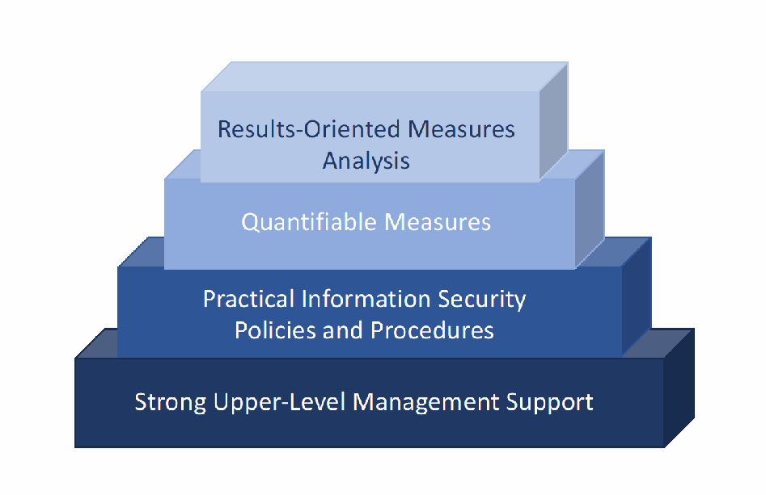
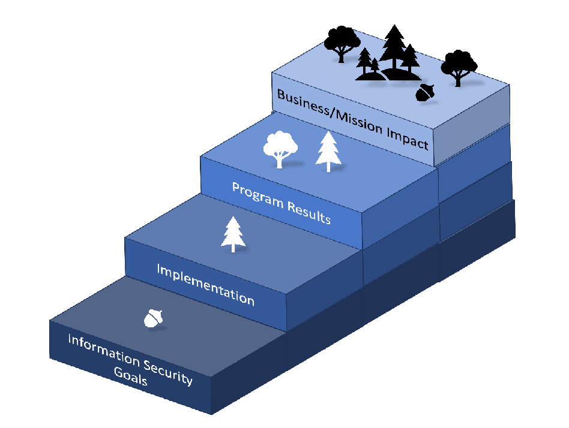

NIST Special Publication · PDF 原文抽出
Measurement Guide for Information Security: Volume 2 — Developing an Information Security Measurement Program
情報セキュリティ測定ガイド 第2巻：情報セキュリティ測定プログラムの策定
NIST SP 800-55 Vol. 2（Measurement Guide for Information Security: Volume 2 — Developing an Information Security Measurement Program）の英文と日本語訳を段落ごとに並べた閲覧用ページです。組織が柔軟な枠組みで情報セキュリティ測定プログラムを策定し、測定指標の開発と実施を進めるための指針を示します。 翻訳は有志による非公式のもので、NIST および米国商務省が作成・承認・推奨したものではありません。要件の確認にはNIST の正式版 PDFを参照してください。
NIST Special Publication 800
NIST特別刊行物800
NIST SP 800-55v2
NIST SP 800-55v2
Measurement Guide for Information Security
情報セキュリティ測定ガイド
Volume 2 — Developing an Information Security
第2巻 — 策定する情報セキュリティ
Measurement Program
測定プログラム
Katherine Schroeder Hung Trinh Victoria Yan Pillitteri
Katherine Schroeder、Hung Trinh、Victoria Yan Pillitteri
This publication is available free of charge from: https://doi.org/10.6028/NIST.SP.800-55v2
本刊行物は以下から無料で入手できます：https://doi.org/10.6028/NIST.SP.800-55v2
［NIST のロゴ。公的な標章のため、この非公式サイトには掲載していない。原本 PDF を参照。］
NIST Special Publication 800
NIST特別刊行物800
NIST SP 800-55v2
NIST SP 800-55v2
Measurement Guide for Information Security
情報セキュリティ測定ガイド
Volume 2 — Developing an Information Security
第2巻 — 策定する情報セキュリティ
Measurement Program
測定プログラム
Katherine Schroeder Hung Trinh Victoria Yan Pillitteri Computer Security Division Information Technology Laboratory
Katherine Schroeder、Hung Trinh、Victoria Yan Pillitteri コンピュータセキュリティ部門 情報技術研究所
This publication is available free of charge from: https://doi.org/10.6028/NIST.SP.800-55v2
本刊行物は以下から無料で入手できます：https://doi.org/10.6028/NIST.SP.800-55v2
December 2024
2024年12月
［米国商務省の紋章。公的な標章のため、この非公式サイトには掲載していない。原本 PDF を参照。］
U.S. Department of Commerce Gina M. Raimondo, Secretary
米国商務省 Gina M. Raimondo、商務長官
National Institute of Standards and Technology
米国国立標準技術研究所
Laurie E. Locascio, NIST Director and Under Secretary of Commerce for Standards and Technology
Laurie E. Locascio、NIST所長兼商務省標準技術担当次官
Certain equipment, instruments, software, or materials, commercial or non-commercial, are identified in this paper in order to specify the experimental procedure adequately. Such identification does not imply recommendation or endorsement of any product or service by NIST, nor does it imply that the materials or equipment identified are necessarily the best available for the purpose.
実験手順を適切に指定するため、本書では特定の機器、装置、ソフトウェアまたは材料（市販品か非市販品かを問わない）を特定することがある。その特定は、NISTによる製品またはサービスの推奨もしくは保証を意味せず、特定された材料や機器が目的に対して必ずしも最良であることを意味しない。
There may be references in this publication to other publications currently under development by NIST in accordance with its assigned statutory responsibilities. The information in this publication, including concepts and methodologies, may be used by federal agencies even before the completion of such companion publications. Thus, until each publication is completed, current requirements, guidelines, and procedures, where they exist, remain operative. For planning and transition purposes, federal agencies may wish to closely follow the development of these new publications by NIST.
本刊行物には、NISTが割り当てられた法的責任に従って現在策定中の他の刊行物への参照が含まれる場合がある。本刊行物の情報（概念や方法論を含む）は、関連する刊行物が完成する前であっても連邦機関が利用できる。したがって、各刊行物が完成するまで、現行の要件、指針、手順が存在する場合は、引き続き有効である。計画や移行の目的で、連邦機関はNISTによるこれらの新刊行物の策定状況を注意深く追うことを望む場合がある。
Organizations are encouraged to review all draft publications during public comment periods and provide feedback to NIST. Many NIST cybersecurity publications, other than the ones noted above, are available at https://csrc.nist.gov/publications.
組織には、公開意見募集期間中にすべての草案刊行物を確認し、NISTにフィードバックを提供することが推奨される。上記に記載したもの以外にも、多数のNISTサイバーセキュリティ刊行物を以下から入手できる：https://csrc.nist.gov/publications
Authority This publication has been developed by NIST in accordance with its statutory responsibilities under the Federal Information Security Modernization Act (FISMA) of 2014, 44 U.S.C. § 3551 et seq., Public Law (P.L.) 113-283. NIST is responsible for developing information security standards and guidelines, including minimum requirements for federal information systems, but such standards and guidelines shall not apply to national security systems without the express approval of appropriate federal officials exercising policy authority over such systems. This guideline is consistent with the requirements of the Office of Management and Budget (OMB) Circular A-130.
権限 本刊行物は、2014年連邦情報セキュリティ近代化法（FISMA）、合衆国法典第44編第3551条以下および公法113-283に基づく法的責任に従って、NISTが策定した。NISTは、連邦情報システムの最低要件を含む情報セキュリティ標準および指針を策定する責任を負う。ただし、当該標準および指針は、そのようなシステムについて政策権限を行使する適切な連邦職員の明示的な承認なしに、国家安全保障システムに適用してはならない。本指針は、行政管理予算局（OMB）通達A-130の要件に整合している。
Nothing in this publication should be taken to contradict the standards and guidelines made mandatory and binding on federal agencies by the Secretary of Commerce under statutory authority. Nor should these guidelines be interpreted as altering or superseding the existing authorities of the Secretary of Commerce, Director of the OMB, or any other federal official. This publication may be used by nongovernmental organizations on a voluntary basis and is not subject to copyright in the United States. Attribution would, however, be appreciated by NIST.
本刊行物のいかなる内容も、法的権限に基づき商務長官が連邦機関に義務付け、拘束力を持たせた標準および指針に反すると解釈してはならない。また、本指針を、商務長官、OMB長官、その他の連邦職員が有する既存の権限を変更または置き換えるものと解釈してはならない。本刊行物は、非政府組織が任意に利用でき、米国内の著作権の対象ではない。ただし、NISTの出典表示を歓迎する。
NIST Technical Series Policies Copyright, Use, and Licensing Statements NIST Technical Series Publication Identifier Syntax
NIST技術シリーズの方針 著作権、利用およびライセンスに関する声明 NIST技術シリーズ刊行物識別子の構文
Publication History Approved by the NIST Editorial Review Board on 2024-11-04 Supersedes NIST SP 800-55 Rev. 1 (July 2008) https://doi.org/10.6028/NIST.SP.800-55r1
刊行履歴 NIST編集審査委員会による承認日：2024年11月4日 NIST SP 800-55改訂1（2008年7月）を置き換える https://doi.org/10.6028/NIST.SP.800-55r1
How to Cite this NIST Technical Series Publication Schroeder K, Trinh H, Pillitteri VY (2024) Measurement Guide for Information Security: Volume 2 — Developing an Information Security Measurement Program. (National Institute of Standards and Technology, Gaithersburg, MD), NIST Special Publication (SP) NIST SP 800-55v2. https://doi.org/10.6028/NIST.SP.800-55v2
本NIST技術シリーズ刊行物の引用方法 Schroeder K、Trinh H、Pillitteri VY（2024年）『情報セキュリティ測定ガイド：第2巻 — 情報セキュリティ測定プログラムの策定』（Measurement Guide for Information Security: Volume 2 — Developing an Information Security Measurement Program）。米国国立標準技術研究所（メリーランド州ゲイサーズバーグ）、NIST特別刊行物（SP）NIST SP 800-55v2。https://doi.org/10.6028/NIST.SP.800-55v2
Author ORCID iDs Katherine Schroeder: 0000-0002-4129-9243 Hung Trinh: 0000-0002-3323-0836 Victoria Yan Pillitteri: 0000-0002-7446-7506
著者のORCID iD Katherine Schroeder：0000-0002-4129-9243 Hung Trinh：0000-0002-3323-0836 Victoria Yan Pillitteri：0000-0002-7446-7506
Contact Information cyber-measures@list.nist.gov
連絡先情報 cyber-measures@list.nist.gov
National Institute of Standards and Technology Attn: Computer Security Division, Information Technology Laboratory 100 Bureau Drive (Mail Stop 8930) Gaithersburg, MD 20899-8930
米国国立標準技術研究所 宛先：コンピュータセキュリティ部門、情報技術研究所 100 Bureau Drive（郵便区分8930） Gaithersburg, MD 20899-8930
Additional Information Additional information about this publication is available at https://csrc.nist.gov/pubs/sp/800/55/v2/final, including related content, potential updates, and document history.
追加情報 本刊行物の関連コンテンツ、今後の更新、文書履歴などの追加情報は以下を参照：https://csrc.nist.gov/pubs/sp/800/55/v2/final
All comments are subject to release under the Freedom of Information Act (FOIA).
すべてのコメントは、情報公開法（FOIA）に基づく開示の対象となる。
Abstract
概要
This document provides guidance on how an organization can develop an information security measurement program with a flexible structure for approaching activities around the development and implementation of information security measures.
本書は、情報セキュリティ測定尺度の策定と実装に関する活動に取り組むための柔軟な構成を備えた、情報セキュリティ測定プログラムを組織が策定する方法についての指針を示す。
Keywords
キーワード
assessment; information security; measurement; measures; metrics; performance; program; reports; security controls.
評価、情報セキュリティ、測定、測定尺度、指標、パフォーマンス、プログラム、報告書、セキュリティ管理策。
Reports on Computer Systems Technology
コンピュータシステム技術に関する報告書
The Information Technology Laboratory (ITL) at the National Institute of Standards and Technology (NIST) promotes the U.S. economy and public welfare by providing technical leadership for the Nation’s measurement and standards infrastructure. ITL develops tests, test methods, reference data, proof of concept implementations, and technical analyses to advance the development and productive use of information technology. ITL’s responsibilities include the development of management, administrative, technical, and physical standards and guidelines for the cost-effective security and privacy of other than national security-related information in federal information systems. The Special Publication 800-series reports on ITL’s research, guidelines, and outreach efforts in information system security, and its collaborative activities with industry, government, and academic organizations.
米国国立標準技術研究所（NIST）の情報技術研究所（ITL）は、計測と標準の基盤に技術的なリーダーシップを発揮し、米国の経済と公共の福祉を促進している。ITLは、情報技術の発展と生産的な利用を推進するため、試験、試験方法、参照データ、概念実証の実装、および技術分析を開発する。ITLの責務には、連邦情報システムにおける国家安全保障関連以外の情報のセキュリティとプライバシーを費用対効果よく確保するため、管理面、事務面、技術面、物理面の標準およびガイドラインを策定することが含まれる。SP 800シリーズは、ITLの情報システムセキュリティに関する研究、ガイドライン、普及活動ならびに産業界、政府、学術機関との協力活動を報告する。
Audience
対象読者
This guide is written primarily for users with responsibilities or interest in information security measurement and assessment. Government and industry can use the concepts, processes, and candidate measures presented in this guide.
本ガイドは主に、情報セキュリティ測定および評価に関する責任または関心を持つ利用者を対象とする。政府および産業界は、本ガイドに示す概念、プロセス、候補となる尺度を利用できる。
Patent Disclosure Notice
特許開示に関する通知
NOTICE: ITL has requested that holders of patent claims whose use may be required for compliance with the guidance or requirements of this publication disclose such patent claims to ITL. However, holders of patents are not obligated to respond to ITL calls for patents and ITL has not undertaken a patent search in order to identify which, if any, patents may apply to this publication.
通知：本刊行物の指針または要件への準拠に使用が必要となる可能性のある特許請求項について、ITLはその保有者に開示を求めている。ただし、特許保有者にはITLの特許照会に応答する義務はなく、ITLは本刊行物に適用される可能性のある特許の有無を特定するための特許調査を実施していない。
As of the date of publication and following call(s) for the identification of patent claims whose use may be required for compliance with the guidance or requirements of this publication, no such patent claims have been identified to ITL.
本刊行物の発行日時点で、また準拠に使用が必要となる可能性のある特許請求項を特定するための照会を行った結果、本刊行物に該当する特許請求項はITLに報告されていない。
No representation is made or implied by ITL that licenses are not required to avoid patent infringement in the use of this publication.
本刊行物の使用に際して特許侵害を避けるためのライセンスが不要であると、ITLが表明または暗示するものではない。
Table of Contents
目次
1. Introduction — 1
1. 序論 — 1
1.1. Purpose and Scope — 1
1.1. 目的と適用範囲 — 1
1.2. Relationship to Other NIST Publications — 1
1.2. 他のNIST刊行物との関係 — 1
1.3. Document Organization — 2
1.3. 文書の構成 — 2
1.4. Document Terminology — 2
1.4. 文書内の用語 — 2
2. Fundamentals — 3
2. 基礎 — 3
2.1. Measurement Program Benefits — 3
2.1. 測定プログラムの利点 — 3
2.2. Program Scope — 3
2.2. プログラムの適用範囲 — 3
2.3. Foundations for a Successful Information Security Measurement Program — 4
2.3. 情報セキュリティ測定プログラムを成功させる基盤 — 4
2.4. Roles and Responsibilities — 6
2.4. 役割と責任 — 6
2.4.1. Chief Executive Officer/Agency Head — 6
2.4.1. 最高経営責任者／機関の長 — 6
2.4.2. Chief Information Officer — 7
2.4.2. 最高情報責任者 — 7
2.4.3. Chief Information Security Officer — 7
2.4.3. 最高情報セキュリティ責任者 — 7
2.4.4. Program Managers and System Owners — 8
2.4.4. プログラム管理者およびシステム所有者 — 8
2.4.5. Other Roles — 8
2.4.5. その他の役割 — 8
2.5. Programmatic Value of Metrics — 9
2.5. メトリクスがプログラムにもたらす価値 — 9
2.6. Measures Communication — 9
2.6. 測定尺度に関するコミュニケーション — 9
2.7. Measurement Program Considerations — 10
2.7. 測定プログラムに関する考慮事項 — 10
2.7.1. Organizational Considerations — 11
2.7.1. 組織上の考慮事項 — 11
2.7.2. Manageability — 11
2.7.2. 管理可能性 — 11
2.7.3. Data Management Concerns — 11
2.7.3. データ管理上の懸念 — 11
3. Workflow for Implementing an Information Security Measurement Program — 12
3. 情報セキュリティ測定プログラムの実装ワークフロー — 12
3.1. Evaluation and Definition of the Existing Security Program — 13
3.1. 既存のセキュリティプログラムの評価と定義 — 13
3.1.1. Gathering Stakeholder Input — 14
3.1.1. ステークホルダーから意見を収集する — 14
3.1.2. Goals and Objectives — 14
3.1.2. 目標および目的 — 14
3.1.3. Information Security Policies, Procedures, and Guidelines — 15
3.1.3. 情報セキュリティの方針、手順および指針 — 15
3.1.4. Evaluating Current Implementation — 15
3.1.4. 現在の実装を評価する — 15
3.2. Identification and Prioritization of Measures — 16
3.2. 測定尺度の特定と優先順位付け — 16
3.3. Data Collection and Analysis — 19
3.3. データの収集と分析 — 19
3.4. Identify Corrective Actions — 21
3.4. 是正措置の特定 — 21
3.5. Apply Corrective Actions — 22
3.5. 是正措置の適用 — 22
References — 23
参考文献 — 23
Appendix A. Glossary — 24
付録A. 用語集 — 24
Appendix B. Change Log — 25
付録B. 変更履歴 — 25
List of Figures
図一覧
Fig. 1. Information security measurement program structure — 5
図1. 情報セキュリティ測定プログラムの構造 — 5
Fig. 2. Information security measurement program workflow — 12
図2. 情報セキュリティ測定プログラムのワークフロー — 12
Fig. 3. Evaluation and definition of the existing security program — 13
図3. 既存セキュリティプログラムの評価と定義 — 13
Fig. 4. Identify and prioritize measures — 16
図4. 測定尺度の特定と優先順位付け — 16
Fig. 5. Information security program development and types of measurement — 18
図5. 情報セキュリティプログラムの策定と測定の種類 — 18
Fig. 6. Information security measures development process — 19
図6. 情報セキュリティ測定尺度の策定プロセス — 19
Fig. 7. Information security measurement implementation — 20
図7. 情報セキュリティ測定の実装 — 20
1. Introduction
1. 序論
Organizational, financial, and regulatory reasons drive the desire to build a robust information security measurement program. Such programs facilitate decision-making and improve performance and accountability by providing a structure for collecting, analyzing, and reporting relevant and related data. Organizations can use measures as management tools in their internal improvement efforts and link the implementation of their information security programs to agency- and enterprise-level planning efforts.
組織上、財務上、規制上の理由により、堅牢な情報セキュリティ測定プログラムを構築する必要が生じる。このようなプログラムは、関連するデータを収集、分析、報告する仕組みを提供し、意思決定を促進するとともに、パフォーマンスと説明責任を改善する。組織は測定尺度を内部改善のための管理ツールとして活用し、情報セキュリティプログラムの実装を、機関レベルおよびエンタープライズレベルの計画活動に結び付けることができる。
Purpose and Scope
目的と適用範囲
NIST Special Publication (SP) 800-55v2 (Volume 2) is a flexible guide for developing and implementing an information security measurement program. The term “program” in SP 800-55v2 is intended to signify a flexible structure for approaching activities around the development and implementation of information security measures. A measurement program can be part of an existing cybersecurity program or its own dedicated effort. Measures provide the means for tying information security policy, procedure, and control1 implementation, efficiency, and effectiveness to an organization’s success in its business activities.
NIST特別刊行物（SP）800-55v2（第2巻）は、情報セキュリティ測定プログラムの策定および実装に関する柔軟なガイドである。SP 800-55v2で用いる「プログラム」という語は、情報セキュリティ測定尺度の策定および実装に関する活動に取り組むための柔軟な仕組みを意味する。測定プログラムは、既存のサイバーセキュリティプログラムの一部でも、独立した取り組みでもよい。測定尺度は、情報セキュリティ方針、手順、管理策1の実装、効率性、有効性を、組織の事業活動の成功に結び付ける手段となる。
This document provides a methodology for developing and implementing an information security measurement program, while SP 800-55v1 [10] addresses the selection and development of information security measures. SP 800-55v2 discusses the concept of organizational or program maturity but is not intended for use as a maturity model and is intentionally agnostic toward any specific maturity models.
本書は情報セキュリティ測定プログラムの策定と実装の方法論を示す。一方、SP 800-55v1 [10]では、情報セキュリティ測定尺度の選択と策定を扱う。SP 800-55v2は組織またはプログラムの成熟度という概念を論じるが、成熟度モデルとしての利用を意図しておらず、特定の成熟度モデルを前提としない。
Relationship to Other NIST Publications
他のNIST刊行物との関係
This document is intended to provide considerations for measuring the information security program activities described in other NIST publications, including:
本書は、次を含む他のNIST刊行物に記載された情報セキュリティプログラム活動を測定する際の考慮事項を示す。
•SP 800-137A, Assessing Information Security Continuous Monitoring Programs [1]
•SP 800-137A『情報セキュリティ継続的監視プログラムの評価』[1]
•The NIST Cybersecurity Framework (CSF) 2.0 [2]
•NISTサイバーセキュリティフレームワーク（CSF）2.0 [2]
•SP 800-30r1 (Revision 1), Guide for Conducting Risk Assessments [3]
•SP 800-30改訂1『リスク評価の実施に関する手引』[3]
•SP 800-37r2, Risk Management Framework for Information Security Systems and Organizations: A System Life Cycle Approach for Security and Privacy [4]
•SP 800-37改訂2『情報システムおよび組織のためのセキュリティとプライバシーに関するリスク管理フレームワーク：システムライフサイクルのアプローチ』[4]
•SP 800-161r1, Cybersecurity Supply Chain Risk Management Practices for Systems and Organizations [5]
•SP 800-161改訂1『システムおよび組織のためのサイバーセキュリティ・サプライチェーンリスク管理の実践』[5]
•Internal Report (IR) 8286, Identifying and Estimating Cybersecurity Risk for Enterprise Risk Management (ERM) [6]
•内部報告書（IR）8286『エンタープライズリスク管理（ERM）のためのサイバーセキュリティリスクの特定と推定』[6]
Document Organization
文書の構成
The remaining sections of this document discuss the following:
本書の残りの各節では、以下を説明する。
•Section 2, Fundamentals
•第2節「基礎」
•Section 3, Workflow for Implementing an Information Security Measurement Program
•第3節「情報セキュリティ測定プログラムの実装ワークフロー」
•Appendix A, Glossary
•付録A「用語集」
•Appendix B, Change Log
•付録B「変更履歴」
Document Terminology
本書で用いる用語
In the context of this document, the terms are defined as follows:
本書では、用語を以下のとおり定義する。
•Assessment: The action of evaluating, estimating, or judging against defined criteria. Different types of assessment (i.e., qualitative, quantitative, and semi-quantitative) are used to assess risk. Some types of assessment yield measures.
•評価：定義済みの基準に照らして評価、推定、または判断する行為。リスク評価には、定性的、定量的、半定量的な各種の評価を用いる。評価によって測定尺度が得られる場合もある。
•Assessment result: The output or outcome of an assessment.
•評価結果：評価の出力または結果。
•Controls: Used here to broadly to describe identified countermeasures to manage information security risks.
•管理策：本書では、情報セキュリティリスクを管理するために特定した対抗策を広く指す用語として使用する。
•Information security2: The protection of information and systems from unauthorized access, use, disclosure, disruption, modification, or destruction to provide confidentiality, integrity, and availability. [7]
•情報セキュリティ2：機密性、完全性、可用性を確保するため、不正なアクセス、使用、開示、中断、改変、破壊から情報およびシステムを保護すること。[7]
•Measurement: The process of obtaining quantitative values using quantitative methods.
•測定：定量的方法を用いて定量値を得るプロセス。
•Measures: Quantifiable and objective values that result from measurement.
•測定尺度：測定によって得られる、定量化可能で客観的な値。
•Metrics: Measures and assessment results designed to track progress, facilitate decision-making, and improve performance with respect to a set target.
•指標：進捗の追跡、意思決定の促進、設定目標に対するパフォーマンス改善のために設計された測定尺度および評価結果。
•Program: A flexible structure for approaching activities around the development and implementation of cybersecurity measures.
•プログラム：サイバーセキュリティ測定尺度の策定および実装に関する活動に取り組むための柔軟な仕組み。
•Qualitative assessment: The use of a set of methods, principles, or rules for assessing risk based on nonnumerical categories or levels. [3]
•定性的評価：数値ではないカテゴリまたは水準に基づき、一定の方法、原則、規則を用いてリスクを評価すること。[3]
•Quantitative assessment: The use of a set of methods, principles, or rules for assessing risks based on the use of numbers where the meanings and proportionality of values are maintained inside and outside of the context of the assessment. [3]
•定量的評価：数値を用い、その値の意味と比例関係が評価の文脈の内外で維持されるように、一定の方法、原則、規則を用いてリスクを評価すること。[3]
•Semi-quantitative assessment: The use of a set of methods, principles, or rules for assessing risk based on bins, scales, or representative numbers whose values and meanings are not maintained in other contexts. [3]
•半定量的評価：値および意味が他の文脈では維持されない区分、尺度、または代表値に基づいてリスクを評価するための、一連の方法、原則、規則を用いること。[3]
2. Fundamentals
2. 基礎
A comprehensive information security measurement program provides evidence to support decisions that directly affect the information security posture of an organization, including budget and personnel requests and the allocation of available resources. A measurement program evaluates the existing security program, identifies and prioritizes potential measures, and implements a structure for collecting data and applying corrective actions based on the findings of those measures. Having a structure to develop and implement information security measures allows for a repeatable and archivable process. An information security measurement program can also support reporting requirements related to information security performance. A relevant measurement program needs support from across the organizational structure.
包括的な情報セキュリティ測定プログラムは、予算や人員の要求、利用可能な資源の配分など、組織の情報セキュリティ態勢に直接影響する判断を支える証拠を提供する。測定プログラムは既存のセキュリティプログラムを評価し、潜在的な測定尺度を特定して優先順位を付け、データを収集し、それらの測定尺度の所見に基づいて是正措置を適用するための仕組みを実装する。情報セキュリティ測定尺度を策定し実装するための仕組みがあることで、反復可能で記録保存可能なプロセスが実現する。情報セキュリティ測定プログラムは、情報セキュリティのパフォーマンスに関する報告要件の支援にも役立つ。適切な測定プログラムには、組織構造全体からの支援が必要である。
Measurement Program Benefits
測定プログラムの利点
A measurement program can provide a consistent and defined structure for collecting, analyzing, and communicating about data to monitor information security risks. It is crafted to meet an organization’s specific risk management goals and legal or regulatory requirements and to enable data-driven decisions about information security. The data collected through a measurement program can help organizations understand how well they are managing their information security risks, whether their personnel are sufficiently educated and trained to minimize risks to the organization, and whether a new service or technology might better serve their security posture. A defined and consistent measurement program enables discussions and communication around measures and the goals of measurement. Where measures and metrics provide data, the program itself provides a broader context and lens to consistently interpret, analyze, and communicate the larger impacts of information security measures.
測定プログラムは、情報セキュリティリスクを監視するためのデータを収集、分析、伝達する一貫した明確な仕組みを提供できる。このプログラムは、組織固有のリスク管理目標や法的・規制上の要件を満たし、データに基づく情報セキュリティ上の判断を可能にするよう設計される。測定プログラムを通じて収集したデータは、情報セキュリティリスクをどれほど適切に管理しているか、リスク最小化のため要員が十分な教育や訓練を受けているか、新たなサービスや技術が自組織のセキュリティ態勢により適している可能性があるかを組織が理解するのに役立つ。明確で一貫した測定プログラムは、測定尺度と測定目標に関する議論やコミュニケーションを可能にする。測定尺度と指標がデータを提供する一方、プログラム自体は、情報セキュリティ測定尺度がもたらすより広範な影響を一貫して解釈、分析、伝達するための、より広い文脈と視点を提供する。
An information security measurement program can increase accountability by helping organizations identify if specific controls that are implemented correctly, are not implemented, or are ineffective. The continuous feedback provided by a structured measurement program supports regular internal communications that collect data about information security performance and risks for high-level members of the organization. Implementing an information security measurement program demonstrates an organizational commitment to proactive information security and continuous improvement. For example, organizations that use the Cybersecurity Capacity Maturity Model (CMM) may implement a measurement program as part of the goal of demonstrating the Level 4, “Managed,” degree of performance. When using the appropriate measures, an information security measurement program enables organizations to quantify improvements in securing systems and demonstrate quantifiable progress in accomplishing strategic goals and objectives. More information on selecting measures can be found in SP 800-55v1.
情報セキュリティ測定プログラムは、正しく実装された管理策、未実装の管理策、または有効でない管理策を組織が特定できるようにし、説明責任を高めることができる。体系化された測定プログラムが提供する継続的なフィードバックは、組織の上級層向けに情報セキュリティのパフォーマンスとリスクに関するデータを収集する、定期的な内部コミュニケーションを支援する。情報セキュリティ測定プログラムの実装は、先を見越した情報セキュリティと継続的改善に対する組織の取り組みを示す。例えば、サイバーセキュリティ能力成熟度モデル（CMM）を利用する組織は、パフォーマンスのレベル4「管理済み」の程度を示すという目標の一環として測定プログラムを実装してよい。適切な測定尺度を用いることで、情報セキュリティ測定プログラムは、システム保護の改善を定量化し、戦略目標・目的の達成に向けた進捗を定量的に示すことができる。測定尺度の選択についてはSP 800-55v1を参照。
Program Scope
プログラムの適用範囲
To ensure the success of program-level measurement, the organization needs consistent, repeatable processes and data availability across the enterprise. In a successful measurement program, these processes are customized to the different environments and needs of the individual organization. Measures can be applied to organizational units, sites, or other constructs to meet specific stakeholder requirements, strategic goals, operating environments, risk priorities, and information security program maturity.
プログラムレベルで測定を成功させるには、企業全体で一貫性と再現性のあるプロセスを設け、データを利用可能にする必要がある。測定プログラムでは、こうしたプロセスを各組織の環境やニーズに合わせて調整する。測定尺度は、ステークホルダー固有の要件、戦略目標、運用環境、リスク優先度、情報セキュリティプログラムの成熟度に応じて、組織単位、拠点、その他の構成に適用できる。
Information security measurement can be implemented at the individual system level to provide quantifiable data about controls. The implementation of a measurement program can help system owners determine the security posture of their system, demonstrate compliance with organizational requirements, and identify areas for improvement. Information security measurement can also be implemented at a program level to monitor and measure the implementation, effectiveness, efficiency, and impact of information security activities across the organization. In short, an information security measurement program provides a mechanism to aggregate measures and support organization-wide decision-making.
個別システムレベルで情報セキュリティを測定し、管理策に関する定量的データを提供できる。測定プログラムの実装は、システム所有者がシステムのセキュリティ態勢を判断し、組織要件への準拠を示し、改善領域を特定するのに役立つ。情報セキュリティ測定は、組織全体の情報セキュリティ活動の実装、有効性、効率性、影響を監視・測定するため、プログラムレベルでも実装できる。要するに、情報セキュリティ測定プログラムは、測定尺度を集約して組織全体の意思決定を支援する仕組みを提供する。
Foundations for a Successful Information Security Measurement Program
情報セキュリティ測定プログラムを成功させるための基盤
An information security measurement program includes four interdependent components, as shown in Fig. 1:
情報セキュリティ測定プログラムには、図1に示す相互依存する4つの構成要素が含まれる。
1.Strong upper-level management support that is integrated into the culture of the organization
1.組織文化に組み込まれた上級管理者の強力な支援
2.Practical information security policies and procedures
2.実用的な情報セキュリティ方針および手順
3.Applicable, quantifiable measures
3.適用可能で定量化可能な測定尺度
4.Results-oriented measures analysis
4.結果を重視した測定尺度の分析

図1. 情報セキュリティ測定プログラムの構造。4つのブロックがピラミッド状に積み重なっており、下から上へ、最も幅の広いものから最も狭いものへと、上級管理者の強力な支援、実用的な情報セキュリティ方針および手順、定量化可能な測定尺度、結果重視の測定尺度の分析の順に並んでいる。
Fig. 1. Information security measurement program structure
図1. 情報セキュリティ測定プログラムの構造
A foundation of strong upper-level management support that is integrated into organizational culture is critical to the success of an information security program. This support establishes a focus on information security within the highest levels of the organization and continues throughout the organization. An information security measurement program can fail under the pressure of organizational dynamics and budget limitations without the proactive support of personnel in positions that control resources.
組織文化に組み込まれた上級管理者の強力な支援基盤は、情報セキュリティプログラムの成功に不可欠である。この支援によって、組織の最上層から全体にわたり、情報セキュリティへの注力が定着する。資源を管理する要員の積極的な支援がなければ、組織内の力学や予算上の制約に押されて情報セキュリティ測定プログラムが失敗する可能性がある。
An effective information security measurement program has practical information security policies and procedures backed by the authority necessary to enforce compliance and manage risk. Information security policies define the information security management structure, assign information security responsibilities, and reliably measure progress. The related procedures document management’s position on implementing information security controls and the rigor with which they are applied. Measures are not easily obtainable if there are no procedures to supply data for measurement.
効果的な情報セキュリティ測定プログラムには、コンプライアンスの徹底とリスク管理に必要な権限に裏付けられた、実用的な情報セキュリティ方針および手順がある。情報セキュリティ方針は、情報セキュリティ管理の体制を定義し、責任を割り当て、進捗を確実に測定する。関連手順には、情報セキュリティ管理策の実装に関する経営陣の立場と、管理策を適用する厳格さが記録される。測定用データを提供する手順がなければ、測定尺度を容易に入手できない。
Quantifiable measures based on performance objectives are developed and established to provide meaningful performance data. Successful security measures are applicable to the organization’s risk management goals and align with organizational requirements. The goals of these measure are to be easily obtainable, feasible to measure, and repeatable to show relevant performance trends, track performance, and direct resources.
意味のあるパフォーマンスデータを提供するため、パフォーマンス目標に基づく定量化可能な測定尺度を策定し、確立する。効果的なセキュリティ測定尺度は、組織のリスク管理目標に適用でき、組織要件と整合する。これらの測定尺度は、関連するパフォーマンス傾向の把握、パフォーマンスの追跡、資源配分の指針に役立つよう、容易に取得でき、測定可能で、再現性があることを目指す。
Finally, the information security measurement program emphasizes consistent and periodic analyses of the data provided by measurements, which allows for security issues to be addressed. The lessons learned from these analyses can improve the effectiveness of existing controls and help organizations plan the implementation of future controls. To ensure meaningful and useful collected data, stakeholders and users will prioritize accurate data collection. More information on quantifiable measures and measures analysis can be found in SP 800-55v1.
最後に、情報セキュリティ測定プログラムでは、測定データを一貫した方法で定期的に分析し、セキュリティ上の問題に対処できるようにする。分析から得られた教訓は、既存の管理策の有効性を高め、今後の管理策の実装計画に役立つ。収集したデータを有意義で有用なものにするため、ステークホルダーと利用者は正確なデータ収集を優先する。定量化可能な測定尺度と測定尺度の分析についてはSP 800-55v1を参照。
Roles and Responsibilities
役割と責任
This section outlines the key roles and responsibilities for developing and implementing an information security measurement program. While all organization members are ultimately responsible for information security, the positions described here are specific to key information security stakeholders. Organizations have varying missions, business functions, and organizational structures, so there may be differences in naming conventions and how responsibilities are allocated across organizational personnel. However, known functions and responsibilities must be assigned to ensure accountability. To achieve desired outcomes, all roles must be empowered and resourced, regardless of the organizational structure adopted. The application of a measurement program as described in this publication is intended to be flexible and allow organizations to manage their measurement needs.
本節では、情報セキュリティ測定プログラムの策定および実装に関する主要な役割と責任を概説する。組織の全構成員は最終的に情報セキュリティに責任を負うが、ここで説明する役職は主要な情報セキュリティステークホルダーに関するものである。組織によってミッション、事業機能、構造が異なるため、職員の役職名や責任の割り当て方法に違いが生じることがある。ただし、説明責任を確保するため、既知の機能と責任を割り当てなければならない。採用する組織構造にかかわらず、望ましい成果を得るには、すべての役割に権限と資源を与えなければならない。本刊行物が説明する測定プログラムの適用方法は柔軟であり、組織が測定ニーズを管理できるよう意図されている。
2.4.1. Chief Executive Officer/Agency Head
2.4.1. 最高経営責任者／機関の長
The information security measurement responsibilities of the Chief Executive Officer (CEO) or agency head include:
最高経営責任者（CEO）または機関の長が担う情報セキュリティ測定の責任は、次のとおりである。
•Ensuring that information security measures are used in support of strategic and operational planning processes to secure the organization’s mission
•組織のミッションを確保するため、戦略計画および運用計画のプロセスを支援する情報セキュリティ測定尺度の利用を徹底する。
•Ensuring that the Chief Information Officer (CIO) or Chief Information Security Officer (CISO) integrates information security measures into annual reporting on the effectiveness of the information security program
•最高情報責任者（CIO）または最高情報セキュリティ責任者（CISO）が、情報セキュリティプログラムの有効性に関する年次報告に情報セキュリティ測定尺度を組み込むよう徹底する。
•Demonstrating support for information security measures development and implementation and communicating official support to the organization
•情報セキュリティ測定尺度の策定および実装を支援する姿勢を示し、公式な支援を組織内に伝える。
•Providing adequate financial and human resources for successful information security measurement activities
•情報セキュリティ測定活動を成功させるため、十分な財務資源および人的資源を提供する。
•Actively promoting information security measurement as an essential facilitator of information security performance improvement throughout the organization
•組織全体で、情報セキュリティのパフォーマンス改善を促進する重要な手段として、情報セキュリティ測定を積極的に推進する。
•Approving policies to officially institute measures collection
•測定尺度の収集を正式に制度化する方針を承認する。
2.4.2. Chief Information Officer3
2.4.2. 最高情報責任者3
The information security measurement responsibilities of the Chief Information Officer (CIO) include:
最高情報責任者（CIO）が担う情報セキュリティ測定の責任は、次のとおりである。
•Orchestrating the development and implementation of an information security measurement program
•情報セキュリティ測定プログラムの策定と実装を統括する。
•Using information security measures to assist in monitoring compliance with applicable information security requirements
•情報セキュリティ測定尺度を用いて、該当する情報セキュリティ要件への準拠状況の監視を支援する。
•Using information security measures to report on the effectiveness of the organization’s information security program
•情報セキュリティ測定尺度を用いて、組織の情報セキュリティプログラムの有効性を報告する。
•Demonstrating management’s commitment to the development and implementation of information security measures through formal leadership
•正式なリーダーシップを通じて、情報セキュリティ測定尺度の策定と実装に対する経営陣の取り組みを示す。
•Formally communicating the importance of using information security measures to monitor the overall health of the information security program and comply with applicable regulations
•情報セキュリティプログラム全体の健全性の監視と該当規制への準拠に、情報セキュリティ測定尺度を用いる重要性を正式に伝達する。
•Allocating adequate and consistent financial and human resources to the information security measurement program
•情報セキュリティ測定プログラムに、十分かつ一貫した財務資源および人的資源を割り当てる。
•Regularly reviewing information security measures and using that feedback to support policies, resource allocation, budget decisions, and assessments of the information security program’s posture and operational risks to agency information systems
•情報セキュリティ測定尺度を定期的にレビューし、そのフィードバックを方針、資源配分、予算判断、情報セキュリティプログラムの態勢評価、機関の情報システムに対する運用リスク評価に役立てる。
•Ensuring that a process is in place to prioritize and address issues discovered through measures analysis and taking corrective actions, such as revising information security procedures and providing additional information security training to staff
•測定尺度の分析で発見された問題に優先順位を付けて対処するプロセスを確保し、情報セキュリティ手順の改訂や職員への追加の情報セキュリティ研修の実施などの是正措置を講じる。
•Explicitly assigning specific individuals with the necessary authority and resources to remediate exceptions identified by the information security measurement program
•情報セキュリティ測定プログラムで特定された例外を是正するため、必要な権限と資源を備えた担当者を明示的に指定する。
•Approving and issuing policies, procedures, and guidelines to officially develop, implement, and institute measures
•測定尺度を正式に策定、実装、制度化するための方針、手順、指針を承認・発行する。
2.4.3. Chief Information Security Officer
2.4.3. 最高情報セキュリティ責任者
The information security measurement responsibilities of the Chief Information Security Officer (CISO) include:
最高情報セキュリティ責任者（CISO）が担う情報セキュリティ測定の責任は、次のとおりである。
•Implementing information security measures address information security risks and provide the resolution needed by the organization’s overall risk management goals
•組織全体のリスク管理目標が必要とする分解能（詳細度）を備え、情報セキュリティリスクに対処する情報セキュリティ測定尺度を実装する。
•Integrating information security measurement into the process for planning, implementing, evaluating, and documenting remedial actions to address any deficiencies in the organization’s information security policies, procedures, and practices
•情報セキュリティ測定を、組織の情報セキュリティ方針、手順、慣行における不備に対処するための是正措置を計画、実施、評価、文書化するプロセスに統合する。
•Obtaining adequate financial and human resources to support the development and implementation of an information security measurement program
•情報セキュリティ測定プログラムの策定および実装を支援する十分な財務資源と人的資源を確保する。
•Leading the development of internal guidelines or policies related to information security measures
•情報セキュリティ測定尺度に関する内部指針または方針の策定を主導する。
•Utilizing information security measures to report on the effectiveness of the organization’s information security program, including remedial actions
•是正措置を含む組織の情報セキュリティプログラムの有効性を報告するため、情報セキュリティ測定尺度を利用する。
•Ensuring that a standard process is used throughout the organization for information security measures development, creation, analysis, and reporting
•情報セキュリティ測定尺度の策定、作成、分析、報告に関する標準プロセスを組織全体で利用するよう徹底する。
•Using information security measures for policy, resource allocation, and budget decisions
•方針、資源配分、予算に関する判断に情報セキュリティ測定尺度を利用する。
2.4.4. Program Managers and System Owners
2.4.4. プログラム管理者およびシステム所有者
The information security measurement responsibilities of program managers and system owners include:
プログラム管理者およびシステム所有者が担う情報セキュリティ測定の責任は、次のとおりである。
•Participating in information security measurement program development and implementation by providing feedback on the feasibility of data collection and identifying data sources and repositories
•データ収集の実現可能性に関するフィードバックを提供し、データソースや保管場所を特定することで、情報セキュリティ測定プログラムの策定と実装に参加する。
•Implementing corrective actions identified through measuring information security
•情報セキュリティ測定を通じて特定した是正措置を実施する。
•Educating staff on the development, collection, analysis, and reporting of information security measures and their effects on information security policy, requirements, resource allocation, and budget decisions
•情報セキュリティ測定尺度の策定、収集、分析、報告、および情報セキュリティ方針、要件、資源配分、予算判断への影響について職員を教育する。
•Confirming that measurement data is consistently and accurately collected and provided to designated staff for analysis and reporting
•測定データが一貫性と正確性を保って収集され、分析と報告のために指定職員へ提供されることを確認する。
•Directing the full participation and cooperation of staff, when required
•必要に応じて、職員が全面的に参加し協力するよう指示する。
•Regularly reviewing information security measures data and using the data for policy, resource allocation, and budget decisions
•情報セキュリティ測定データを定期的にレビューし、そのデータを方針、資源配分、予算に関する判断に利用する。
•Supporting the implementation of corrective actions identified by measuring information security performance
•情報セキュリティのパフォーマンス測定で特定した是正措置の実装を支援する。
2.4.5. Other Roles
2.4.5. その他の役割
The information security measurement responsibilities of individuals who report to program managers or system owners include:
プログラム管理者またはシステム所有者に報告する職員が担う情報セキュリティ測定の責任は、次のとおりである。
•Participating in the development and implementation of an information security measurement program by providing feedback on the feasibility of data collection and identifying data sources and repositories
•データ収集の実現可能性に関するフィードバックを提供し、データソースや保管場所を特定することで、情報セキュリティ測定プログラムの策定および実装に参加する。
•Collecting data or providing measurement data to designated staff who are collecting, analyzing, and reporting data
•データを収集する、またはデータを収集、分析、報告する指定職員に測定データを提供する。
•Partnering with technology, architects, engineers, and operations teams to ensure that technology is selected, configured, and deployed to deliver the metrics requires by the information security measurement program
•情報セキュリティ測定プログラムが必要とする指標を得られるよう、技術チーム、アーキテクト、エンジニア、運用チームと協力して技術の選択、構成、展開を行う。
Information security measurement may require additional input and coordination from various organizational components or stakeholders, including incident response, information technology operations, privacy, enterprise architecture, human resources, physical security, legal counsel, and others.
情報セキュリティ測定には、インシデント対応、情報技術運用、プライバシー、エンタープライズアーキテクチャ、人事、物理セキュリティ、法務など、さまざまな組織部門やステークホルダーから追加の意見や調整が必要となる場合がある。
Programmatic Value of Metrics
指標のプログラム上の価値
Metrics are designed to track progress, facilitate decision-making, and improve performance by providing insight into organization performance. Metrics may be the results of measurements or assessments of trends, and they provide a common language for technical teams and management to discuss information security. Metrics can also help prioritize areas for growth, improvement, or the reallocation of resources.
指標は、組織のパフォーマンスに関する知見を提供し、進捗の追跡、意思決定の促進、パフォーマンスの改善を図るよう設計される。指標は測定結果や傾向の評価結果となることがあり、技術チームと管理者が情報セキュリティを話し合うための共通言語となる。また、成長や改善、資源再配分が必要な領域の優先順位付けにも役立つ。
By keeping metrics consistent over time, a measurement program can evaluate long-term trends and expected ranges. A new metric may provide important insights, but tracking the measurements related to metrics over a continuous period (e.g., quarter to quarter, year to year) will give more information about the success of organization-, program-, and system-level information security plans, policies, procedures, and goals. Metrics enable goal-setting against industry standards and internal targets. An organization may find a wide variety of metrics to fit their needs, and by utilizing the findings of an information security measurement program, the organization will be better prepared to make decisions about measures and track changes. More information about the process of selecting and analyzing specific measures can be found in SP 800-55v1.
指標の一貫性を長期間保つことで、測定プログラムは長期的な傾向と想定範囲を評価できる。新たな指標から重要な知見が得られる場合もあるが、指標に関する測定値を継続的に追跡する（例：四半期ごと、年ごと）ことで、組織、プログラム、システムの各レベルにおける情報セキュリティ計画、方針、手順、目標の達成状況をより多く把握できる。指標を使うと、業界標準や内部目標に照らして目標を設定できる。組織のニーズに合う指標は多様に存在し、情報セキュリティ測定プログラムの結果を利用することで、測定尺度に関する判断や変化の追跡をより適切に行える。具体的な測定尺度の選択・分析プロセスについてはSP 800-55v1を参照。
Measures Communication
測定尺度に関するコミュニケーション
An information security measurement program plays a crucial role in enhancing organizational communication and providing insights to higher-level management and executives. A major challenge concerning information security measurement is translating technically measurable performance data into a form that is contextually relevant to the consumer of the report.
情報セキュリティ測定プログラムは、組織内のコミュニケーションを強化し、上級管理者や経営幹部に知見を提供するうえで重要な役割を果たす。情報セキュリティ測定に関する大きな課題は、技術的に測定可能なパフォーマンスデータを、報告書の利用者にとって文脈上意味のある形に変換することである。
Measurements provide quantifiable data about an organization’s information security posture, such as incident response times. This data can then be used to make informed decisions about resource allocation, risk mitigation strategies, and investment priorities. Senior leadership will consider their organization’s reporting requirements to identify the most useful reporting style.
測定によって、インシデント対応時間など、組織の情報セキュリティ態勢に関する定量データが得られる。このデータは、資源配分、リスク軽減戦略、投資優先度について情報に基づく判断を下すために利用できる。上級リーダーは、自組織の報告要件を考慮し、最も有用な報告形式を特定する。
Data from various sources (e.g., vulnerability scans, incident logs, and compliance assessments) can be aggregated to help executives understand information security. Summarizing measurement findings and metrics into concise reports facilitates efficient communication. Regularly reporting on measurement and assessment results fosters transparency, promotes accountability for meeting performance targets, and encourages continuous improvements. Sharing findings with executives demonstrates the organization’s commitment to its information security posture.
脆弱性スキャン、インシデントログ、コンプライアンス評価など、さまざまな情報源のデータを集約すると、経営幹部が情報セキュリティを理解するのに役立つ。測定結果や指標を簡潔な報告書にまとめれば、効率的なコミュニケーションが可能になる。測定・評価結果を定期的に報告することで、透明性が高まり、パフォーマンス目標の達成に対する説明責任が促され、継続的改善が進む。結果を経営幹部と共有することは、組織の情報セキュリティ態勢に対する取り組みを示す。
A common challenge is determining what data to include and how to aggregate large amounts of data to tell a meaningful story. When communicating about information security measurement, an organization will consider the goals of reporting. For example, when selecting measures to communicate about risk, the following considerations are helpful:
よくある課題は、どのデータを含めるか、また大量のデータをどのように集約すれば意味のある説明になるかを判断することである。情報セキュリティ測定について伝える際、組織は報告の目的を検討する。例えば、リスクについて伝える測定尺度を選ぶときは、次の点を考慮するとよい。
•What measures tell a more precise risk story?
•リスクの状況をより正確に伝える測定尺度は何か。
•What measures would drive necessary action?
•必要な対応を促す測定尺度は何か。
•What measures will be best understood by the recipient?
•受け手が最も理解しやすい測定尺度は何か。
•What measures deliver risk insights most effectively?
•リスクに関する知見を最も効果的に提供する測定尺度は何か。
Organizations may want to combine the results of individual measures or metrics to show aggregated data. Gaining insight requires measures that have meaning and context within the organization. Ultimately, the needs of an individual organization will determine what data to aggregate and which data to drill down on when report on findings. More information on developing, selecting, and evaluating measures that fit the needs of an organization can be found in SP 800-55v1.
組織は個別の測定尺度や指標の結果を組み合わせ、集約データを示したい場合がある。知見を得るには、組織内で意味と文脈を持つ測定尺度が必要である。最終的に、所見を報告する際にどのデータを集約し、どのデータを掘り下げるかは、個々の組織のニーズによって決まる。組織のニーズに合った測定尺度の策定、選択、評価に関する詳細はSP 800-55v1に記載されている。
Communication about information security measures can be narrow or broad, casual or formal. For example, short memos may respond to direct questions and only show one or two measures, whereas a formal annual report may include more detailed information about the organization’s information security posture, risks, audits, confirmed findings, and compliance. A more detailed annual report will require measures related to all of the topics covered in the report. The specific needs and reporting structure of a request for information will determine what data be reported on.
情報セキュリティ測定に関するコミュニケーションは、対象を絞ることも広く扱うこともでき、非公式にも公式にも行える。例えば、短い覚書では直接的な質問に答えるため、1つか2つの測定尺度だけを示す一方、正式な年次報告書では、組織の情報セキュリティ態勢、リスク、監査、確認済みの所見、コンプライアンスを詳しく記載する場合がある。詳細な年次報告書には、報告書の全項目に関連する測定尺度が必要となる。情報提供依頼で報告すべきデータは、具体的なニーズと報告構造によって決まる。
Programs that ensure consistent and reliable information security measurement empower organizations to communicate effectively, make informed decisions, and align security efforts with business objectives. As the information security program evolves, standardized measurement practices will further enhance communication across all levels of the organization.
一貫性と信頼性の高い情報セキュリティ測定を確保するプログラムにより、組織は効果的に伝達し、情報に基づいて判断し、セキュリティ活動を事業目標に整合させることができる。情報セキュリティプログラムが進化するにつれ、測定手法の標準化によって、組織内のあらゆる階層でのコミュニケーションがさらに改善される。
Measurement Program Considerations
測定プログラムに関する考慮事項
When an organization is building a measurement program, the consideration of the specific organizational structure, processes, required budget, personnel, and time resources help make the program successful.
組織が測定プログラムを構築するときは、具体的な組織構造、プロセス、必要な予算、人員、時間資源を考慮することが成功につながる。
2.7.1. Organizational Considerations
2.7.1. 組織上の考慮事項
The development and implementation of information security measures will be coordinated with appropriate stakeholders from relevant organizational elements. Include those who regularly interact with information security even if it is not their primary responsibility, such as the training, resource management, and legal departments. The program will also comply with any existing processes for approving organization-wide data calls and actions. Effective coordination among different organizational elements can ensure that information security measures are implemented uniformly across the organization.
情報セキュリティ測定尺度の策定および実装は、関連する組織部門の適切なステークホルダーと調整する。情報セキュリティが主な責任ではなくても、研修、資源管理、法務など、日常的に情報セキュリティに関わる部門を含める。プログラムは、組織全体へのデータ照会や措置を承認する既存プロセスにも準拠する。組織内の部門間で効果的に調整すれば、情報セキュリティ測定尺度を組織全体で一様に実装できる。
2.7.2. Manageability
2.7.2. 管理可能性
Organizations need to be able to manage their information security measurement program. Here, “manageability” refers to having the organizational resources to support the measurement program’s goals and objectives. The results of many information security activities can be quantified and used for measurement. However, since resources are limited, organizations prioritize measurement requirements to ensure that a limited number of measures are gathered. Ensuring that each stakeholder is responsible for as few measures as possible may make the collected measures meaningful, yield impact and outcome findings, and provide stakeholders with the time necessary to address performance gaps. As the program continues to develop and target levels of measurement are reached, obsolete measures are phased out, and new measures that show the completion and effectiveness of more current items are used.4 Further measures will also be required if the organization’s mission is redefined or if changes are made to information security policies and guidelines.
組織は情報セキュリティ測定プログラムを管理できなければならない。ここでいう「管理可能性」とは、測定プログラムの目標と目的を支える組織資源があることを指す。多くの情報セキュリティ活動の結果は定量化でき、測定に利用できる。しかし、資源には限りがあるため、組織は測定要件に優先順位を付け、収集する測定尺度の数を絞る。各ステークホルダーが担当する測定尺度を可能な限り少なくすれば、収集データの意味が明確になり、影響や成果に関する所見が得られ、パフォーマンス上の不足に対処する時間を確保しやすくなる。プログラムの策定が進み、目標とする測定水準に達したら、古くなった測定尺度を段階的に廃止し、より新しい項目の達成状況と有効性を示す測定尺度に切り替える。4 組織のミッションを再定義した場合や情報セキュリティ方針・指針を変更した場合には、追加の測定尺度も必要となる。
2.7.3. Data Management Concerns
2.7.3. データ管理上の懸念
Having an information security measurement program in place helps organizations establish consistent and well-defined methods for collecting security-related data, including defining what data to collect, how to collect, and at what intervals. Operationally, this may include identifying relevant data sources, determining granularity, and validating data accuracy. The information security measurement program can also ensure that clear metadata is used by defining how data will be normalized with consistent units and formats for accurate aggregation and meaningful comparison. As effective reporting processes are aligned with the information security measurement program’s goals, taking the time to establish a consistent data management environment provides a solid foundation for gathering and aggregating measures data. Lastly, when collecting and storing measurement data, protect the data at the same level as the system itself.
情報セキュリティ測定プログラムを整備すると、収集対象、収集方法、収集間隔の定義など、セキュリティ関連データを収集する一貫性のある明確な方法を組織が確立できる。運用上は、関連するデータソースの特定、粒度の決定、データの正確性の検証を含む場合がある。測定プログラムは、正確な集約と有意義な比較のため、データを一貫した単位および形式で正規化する方法を定めることで、明確なメタデータが用いられるようにすることもできる。効果的な報告プロセスは測定プログラムの目標に整合しているため、一貫したデータ管理環境の確立に時間をかけることは、測定データの収集と集約の確固たる基盤となる。最後に、測定データを収集・保管する際は、システム自体と同じ水準でデータを保護する。
3. Workflow for Implementing an Information Security Measurement Program
3. 情報セキュリティ測定プログラムの実装ワークフロー
The workflow of implementing an information security measurement program consists of five major activities, as shown in Fig. 2:
図2に示すとおり、情報セキュリティ測定プログラムの実装ワークフローは、主に次の5つの活動から成る。
1.Evaluation and definition of the existing security program
1.既存のセキュリティプログラムを評価し、定義する
2.Identification and prioritization of measures
2.測定尺度を特定し、優先順位を付ける
3.Data collection and analysis
3.データを収集し、分析する
4.Identification of corrective actions
4.是正措置を特定する
5.Application of corrective actions
5.是正措置を適用する
![Fig. 2. Information security measurement program workflow. A workflow diagram. A rounded area at the top, headed “1. Evaluation and definition of the existing security program”, contains four boxes connected left to right by arrows: Gather stakeholder input, Goals and objectives, Information security policies, procedures, and guidelines, and Evaluate current implementation. An arrow runs from this area down to a second rounded area, headed “2. Identify and prioritization of measures”, in which Process implementation points to Program results and Program results points to Business/mission impact. Thin dashed arrows run upward from these three boxes to the boxes of the first area: from Process implementation to Evaluate current implementation (labeled Continuous implementation), from Program results to Information security policies, procedures, and guidelines (labeled Policy update), and from Business/mission impact to Goals and objectives (labeled Goal/objective redefinition). An arrow also runs from the second area back up to the first. From the second area, an arrow leads down to a row of three boxes connected left to right: 3. Data collection and analysis, 4. Identification of corrective actions, and 5. Application of corrective actions. From the step 5 box, one arrow returns up to the first area and another loops back to step 3. All parts are shown in color (green, blue and yellow) with black arrows.](assets/55v2/p0020-figure-01.png)
図2. 情報セキュリティ測定プログラムのワークフロー。ワークフロー図。上部の角丸の領域には「1. 既存のセキュリティプログラムの評価と定義」の見出しがあり、ステークホルダーの意見収集、目標と目的、情報セキュリティの方針・手順・ガイドライン、現在の実装の評価の4つの箱が左から右へ矢印でつながる。この領域から下へ矢印が向かう2つ目の角丸の領域には「2. 測定尺度の特定と優先順位付け」の見出しがあり、プロセス実装からプログラムの結果へ、プログラムの結果から事業／ミッションへの影響へと矢印が向かう。これら3つの箱から上の領域の箱へ、細い破線の矢印が上向きに延びる。プロセス実装から現在の実装の評価へ（「継続的実装」と記されている）、プログラムの結果から情報セキュリティの方針・手順・ガイドラインへ（「方針の更新」）、事業／ミッションへの影響から目標と目的へ（「目標／目的の再定義」）である。2つ目の領域から上の領域へ戻る矢印もある。2つ目の領域からは下へ矢印が向かい、3. データの収集と分析、4. 是正措置の特定、5. 是正措置の適用の3つの箱が左から右へつながる。手順5の箱からは、上の領域へ戻る矢印と、手順3へ戻る矢印が出ている。すべての部分が緑、青、黄で示され、矢印は黒である。
Fig. 2. Information security measurement program workflow
図2. 情報セキュリティ測定プログラムのワークフロー
The process is provided in a linear form to encourage the use of a consistent yet flexible methodology that can be tailored to a specific organization and its unique stakeholder groups and applied across different levels of the organization. While the tasks outlined in Fig. 2 appear in sequential order, the process of implementing an information security measurement program may vary by organization and require iterative cycles between task execution and revisiting tasks. There may also be other opportunities to diverge from the sequential nature of the tasks when it is more effective, efficient, or cost-effective to do so.
このプロセスを線形の形で示すのは、一貫性を保ちつつ柔軟で、特定の組織や固有のステークホルダー集団に合わせて調整でき、組織の異なる階層に適用できる方法論の利用を促すためである。図2に示す作業は順番に並んでいるが、情報セキュリティ測定プログラムの実装プロセスは組織によって異なり、作業の実施と見直しを繰り返す必要が生じる場合がある。また、より効果的、効率的、または費用対効果が高い場合には、作業を順番どおりに進めない方法も考えられる。
Evaluation and Definition of the Existing Security Program
既存のセキュリティプログラムの評価と定義
When building and maintaining an information security measurement program, organizations will first identify their measurement needs, as shown in Fig. 3.
情報セキュリティ測定プログラムを構築・維持する際、図3に示すように、組織はまず測定ニーズを特定する。
![Fig. 3. Evaluation and definition of the existing security program. The same workflow as Fig. 2, with only the first area highlighted in green and black arrows; the rest is shown in gray with italic labels. A workflow diagram. A rounded area at the top, headed “1. Evaluation and definition of the existing security program”, contains four boxes connected left to right by arrows: Gather stakeholder input, Goals and objectives, Information security policies, procedures, and guidelines, and Evaluate current implementation. An arrow runs from this area down to a second rounded area, headed “2. Identification and prioritization of measures”, in which Process implementation points to Program results and Program results points to Business/mission impact. Thin dashed arrows run upward from these three boxes to the boxes of the first area: from Process implementation to Evaluate current implementation (labeled Continuous implementation), from Program results to Information security policies, procedures, and guidelines (labeled Policy update), and from Business/mission impact to Goals and objectives (labeled Goal/objective redefinition). An arrow also runs from the second area back up to the first. From the second area, an arrow leads down to a row of three boxes connected left to right: 3. Data collection and analysis, 4. Identification of corrective actions, and 5. Appl corrective actions (the label is cut off in the original). From the step 5 box, one arrow returns up to the first area and another loops back to step 3.](assets/55v2/p0021-figure-01.png)
図3. 既存のセキュリティプログラムの評価と定義。図2と同じワークフローで、最初の領域だけが緑と黒い矢印で強調され、残りは灰色で斜体のラベルである。ワークフロー図。上部の角丸の領域には「1. 既存のセキュリティプログラムの評価と定義」の見出しがあり、ステークホルダーの意見収集、目標と目的、情報セキュリティの方針・手順・ガイドライン、現在の実装の評価の4つの箱が左から右へ矢印でつながる。この領域から下へ矢印が向かう2つ目の角丸の領域には「2. 測定尺度の識別と優先順位付け」の見出しがあり、プロセス実装からプログラムの結果へ、プログラムの結果から事業／ミッションへの影響へと矢印が向かう。これら3つの箱から上の領域の箱へ、細い破線の矢印が上向きに延びる。プロセス実装から現在の実装の評価へ（「継続的実装」と記されている）、プログラムの結果から情報セキュリティの方針・手順・ガイドラインへ（「方針の更新」）、事業／ミッションへの影響から目標と目的へ（「目標／目的の再定義」）である。2つ目の領域から上の領域へ戻る矢印もある。2つ目の領域からは下へ矢印が向かい、3. データの収集と分析、4. 是正措置の特定、5. 是正措置の適用（原図では「5. Appl corrective actions」とラベルが途中で切れている）の3つの箱が左から右へつながる。手順5の箱からは、上の領域へ戻る矢印と、手順3へ戻る矢印が出ている。
Fig. 3. Evaluation and definition of the existing security program
図3. 既存のセキュリティプログラムの評価と定義
Ultimately, there is value in having both stability and flexibility in selecting organizational measures. Important considerations for measurement programs include:
最終的には、組織の測定尺度を選ぶ際、安定性と柔軟性の両方を備えることに価値がある。測定プログラムでは、次の点が重要となる。
•Selecting measures that are most appropriate for the organization’s strategy and business environment, including mission and information security priorities and requirements
•ミッションや情報セキュリティの優先事項・要件を含め、組織の戦略と事業環境に最も適した測定尺度を選ぶ。
•Collecting input from all relevant stakeholders
•関連するすべてのステークホルダーから意見を収集する。
•Ensuring that an appropriate technical and process infrastructure is in place, including creating or modifying data collection, analysis, and reporting tools
•データ収集、分析、報告のツールの作成または変更を含め、適切な技術基盤とプロセス基盤が整備されていることを確認する。
3.1.1. Gathering Stakeholder Input
3.1.1. ステークホルダーの意見収集
Gathering stakeholder input from across the organization ensures that collected measures are meaningful, yield impact and outcome findings, and provide the results necessary to address performance goals. This begins with identifying stakeholders from the top of the organizational structure and working down through organizational roles. It is important to involve a wide range of stakeholders since their interests will differ depending on what aspects of information security they interact with in their roles. Individual organizations will determine which stakeholders to involve and how and when to include them. Each stakeholder may present a different set of measures that provide a view into their area of responsibility. Organizational elements that do not have information security as their primary responsibility but interact with information security regularly may need to be included in this process. While organizational elements that are responsible for measurement are also included, it may not be possible to acquire, process, and implement all stakeholder input, depending on the size of the organization.
組織全体からステークホルダーの意見を収集すると、測定尺度に意味が生まれ、影響や成果に関する所見が得られ、パフォーマンス目標への対応に必要な結果を提供できる。まず組織構造の上層からステークホルダーを特定し、各組織上の役割をたどって下位へ進む。ステークホルダーは役割上関わる情報セキュリティの側面によって関心が異なるため、幅広いステークホルダーを参加させることが重要である。誰を参加させるか、どのように、いつ参加させるかは、各組織が決定する。各ステークホルダーは、自らの責任領域を見通せる、異なる測定尺度の組を提示する場合がある。情報セキュリティを主な責任としないものの、日常的に情報セキュリティに関わる組織部門も、このプロセスに含める必要が生じる場合がある。測定の責任を負う部門も参加させるが、組織の規模によっては、すべてのステークホルダー意見を取得、処理、実装できないこともある。
Stakeholder interests may be determined through multiple venues, such as interviews, brainstorming sessions, mission statement reviews, in-house knowledge, and existing findings from risk assessments. There may also be laws and regulations that the organization may need to consider. Input from those who interact with individual systems and existing system-level data will provide targeted insight into the measurement needs of an organization. Ideally, stakeholder interests will be reviewed periodically during the ongoing work of the information security measurement program.
ステークホルダーの関心事項は、インタビュー、ブレインストーミング、ミッション声明のレビュー、組織内の知見、既存のリスク評価結果など、複数の手段で把握できる。組織が考慮すべき法律や規制が存在する場合もある。個別システムに関わる者からの意見や既存のシステムレベルデータは、組織の測定ニーズに関する的を絞った知見を提供する。理想的には、情報セキュリティ測定プログラムの継続的な活動の中で、ステークホルダーの関心事項を定期的に見直す。
3.1.2. Goals and Objectives
3.1.2. 目標および目的
Information security measurement goals and objectives are identified and documented. Organizational measurement goals and objectives are implicitly tied to their ability to mitigate or reduce threats and risks. As the threat or risk landscape evolves, goals and measures may need to adapt accordingly. These goals and objectives may be expressed through high-level policies and requirements, laws, regulations, guidelines, and guidance. They can also be derived from organization-level goals and objectives that support the organization’s mission or strategic and performance plans.
情報セキュリティ測定の目標と目的を特定し、文書化する。組織の測定目標と目的は、脅威やリスクを軽減または低減する能力に暗黙的に結び付いている。脅威やリスクの状況が変化するにつれ、目標や測定尺度も適応が必要となる場合がある。目標と目的は、上位方針や要件、法律、規制、指針、ガイダンスに示すことができる。また、組織のミッションや戦略計画、パフォーマンス計画を支援する組織レベルの目標と目的から導出できる。
Applicable documents and existing metrics can provide valuable insight about information security, and various metrics may fit organizational needs. Newly developed goals and objectives are validated with the organizational stakeholders to ensure their understanding and support.
適用可能な文書と既存の指標は、情報セキュリティに関する有用な知見を提供し、さまざまな指標を組織のニーズに合わせて利用できる。新たに策定した目標と目的は、組織のステークホルダーが理解し支援できるよう、ステークホルダーとともに妥当性を確認する。
3.1.3. Information Security Policies, Procedures, and Guidelines
3.1.3. 情報セキュリティの方針、手順、指針
Organization-specific policies and procedures set an expectation for information security practices across all levels of the organization and typically outline details on control implementation. Applicable documents are reviewed to identify controls, processes, and performance targets. Any artifacts on information security practices are also examined when measures need to be updated or added. As policies, procedures, and guidelines tie into broader risk management procedures, some organizations may need to meet high-level governance expectations when evaluating and executing control implementation.
組織固有の方針および手順は、組織のすべての階層における情報セキュリティ実践への期待を定め、通常は管理策の実装に関する詳細を示す。適用可能な文書をレビューし、管理策、プロセス、パフォーマンス目標を特定する。測定尺度の更新や追加が必要な際は、情報セキュリティ実践に関する各種資料も確認する。方針、手順、指針はより広範なリスク管理手順と結び付くため、管理策の実装を評価・実行する際に、上位のガバナンス上の期待を満たす必要がある組織もある。
3.1.4. Evaluating Current Implementation
3.1.4. 現在の実装を評価する
Any existing measures and data repositories are reviewed to identify implementation evidence that indicates whether the information security goals and objectives are being met or whether actions that will accomplish the performance objectives in the future are being performed. The level of effort, subjectivity, and the difficulty of assessment are necessary considerations when implementing measures. Often, the best implementation evidence can be resolved with a binary answer, such as “yes/no” or “pass/fail.” The system security requirements, processes, and procedures can be extracted by consulting multiple sources, including documents, interviews, and observation.
既存の測定尺度やデータ保管場所を確認し、情報セキュリティの目標と目的が達成されているか、将来パフォーマンス目標を達成するための活動が行われているかを示す実装証拠を特定する。測定尺度を実装する際には、必要な作業量、主観性、評価の難易度を考慮する必要がある。多くの場合、最適な実装証拠は「はい／いいえ」または「合格／不合格」などの二者択一で判定できる。システムのセキュリティ要件、プロセス、手順は、文書、インタビュー、観察など複数の情報源を参照して抽出できる。
Aggregating multiple system evaluations is essential to gaining a comprehensive view of an organization’s security posture, including how data is collected and ingested (e.g., automated collection; consistent units, formats, and naming conventions; centralized repositories). Operationally, this will include analyzing the results of regularly collected control implementation metrics or time-series evaluations, audits, and control and risk assessments, as well as gathering data on vulnerabilities, controls, and incident response performance. Organizations may want to combine the results of individual metrics or use scoring models to calculate their risk.
複数システムの評価を集約することは、データの収集や取り込み方法（例：自動収集、一貫した単位・形式・命名規則、集中保管場所）を含め、組織のセキュリティ態勢を包括的に把握するうえで不可欠である。運用面では、定期的に収集した管理策実装の指標や時系列の評価、監査、管理策・リスク評価の結果を分析し、脆弱性、管理策、インシデント対応のパフォーマンスに関するデータを集める。組織は、個別の指標の結果を組み合わせたり、スコアリングモデルを利用してリスクを算定したりできる。
As system security practices evolve and the artifacts that describe them change, existing measures will be retired, and new measures will be developed. These and similar artifacts are examined to identify the new areas captured in measures and ensure that the newly developed measures are appropriate. Thus, the organization may establish a mechanism to review information security measures:
システムセキュリティの実践が進化し、それを説明する資料が変わるにつれ、既存の測定尺度を廃止し、新たな測定尺度を策定する。測定尺度で把握する新しい領域を特定し、新たに策定した測定尺度が適切であることを確認するため、こうした資料や関連資料を調査する。そのため、組織は情報セキュリティ測定尺度を次のタイミングでレビューする仕組みを設けることができる。
•On a regular basis
•定期的に
•In response to any impactful event (e.g., by identifying all of the existing measures that could have predicted an issue, identifying any missing measures that could be implemented to improve organizational visibility of risks)
•影響の大きな事象が起きたとき（例：問題を予測できた既存の測定尺度をすべて特定し、リスクの可視性を改善するために実装できる不足測定尺度を特定する）
Identification and Prioritization of Measures
測定尺度の特定と優先順位付け
The second step in establishing an information security measurement program involves developing measures5 that track process implementation, program results, and mission impacts, as shown in Fig. 4.
情報セキュリティ測定プログラムを確立する第2段階では、図4に示すように、プロセス実装、プログラムの結果、ミッションへの影響を追跡する測定尺度5を策定する。
![Fig. 4. Identify and prioritize measures. The same workflow as Fig. 2, with only the second area (Process implementation, Program results, Business/mission impact) highlighted in blue with black arrows, and the dashed feedback labels highlighted; the rest is shown in gray with italic labels. A workflow diagram. A rounded area at the top, headed “1. Evaluation and definition of the existing security program”, contains four boxes connected left to right by arrows: Gather stakeholder input, Goals and objectives, Information security policies, procedures, and guidelines, and Evaluate current implementation. An arrow runs from this area down to a second rounded area, headed “2. Identification and prioritization of measures”, in which Process implementation points to Program results and Program results points to Business/mission impact. Thin dashed arrows run upward from these three boxes to the boxes of the first area: from Process implementation to Evaluate current implementation (labeled Continuous implementation), from Program results to Information security policies, procedures, and guidelines (labeled Policy update), and from Business/mission impact to Goals and objectives (labeled Goal/objective redefinition). An arrow also runs from the second area back up to the first. From the second area, an arrow leads down to a row of three boxes connected left to right: 3. Data collection and analysis, 4. Identification of corrective actions, and 5. Application of corrective actions. From the step 5 box, one arrow returns up to the first area and another loops back to step 3.](assets/55v2/p0024-figure-01.png)
図4. 測定尺度の特定と優先順位付け。図2と同じワークフローで、2 つ目の領域（プロセス実装、プログラムの結果、事業／ミッションへの影響）だけが青と黒い矢印で強調され、破線のフィードバックのラベルも強調されている。残りは灰色で斜体のラベルである。ワークフローの図である。上部の角丸の領域には「1. 既存のセキュリティプログラムの評価と定義」の見出しがあり、ステークホルダーの意見収集、目標と目的、情報セキュリティの方針・手順・ガイドライン、現在の実装の評価の 4 つの箱が左から右へ矢印でつながる。この領域から下へ矢印が向かう 2 つ目の角丸の領域には「2. 測定尺度の特定と優先順位付け」の見出しがあり、プロセス実装からプログラムの結果へ、プログラムの結果から事業／ミッションへの影響へと矢印が向かう。これら 3 つの箱から上の領域の箱へ、細い破線の矢印が上向きに延びる。プロセス実装から現在の実装の評価へ（継続的実装と記されている）、プログラムの結果から情報セキュリティの方針・手順・ガイドラインへ（方針の更新）、事業／ミッションへの影響から目標と目的へ（目標／目的の再定義）である。2 つ目の領域から上の領域へ戻る矢印もある。2 つ目の領域からは下へ矢印が向かい、3. データの収集と分析、4. 是正措置の特定、5. 是正措置の適用 の 3 つの箱が左から右へつながる。手順 5 の箱からは、上の領域へ戻る矢印と、手順 3 へ戻る矢印が出ている。
Fig. 4. Identify and prioritize measures
図4. 測定尺度の特定と優先順位付け
The measures development tasks describe how the measures interact with the iterative process of an information security measurement program. This method connects information security activities to the organization’s strategic goals by developing and using measures that are customized to fit the organization’s needs.
測定尺度の策定作業では、情報セキュリティ測定プログラムの反復プロセスの中で、測定尺度がどのように機能するかを説明する。この方法では、組織のニーズに合わせた測定尺度を策定・利用し、情報セキュリティ活動を組織の戦略目標に結び付ける。
The existence and institutionalization of processes and procedures are foundational to the development of an information security program. As the program progresses, its policies become more detailed and better documented, the processes and procedures it uses become more standardized and repeatable, and the program can produce a greater quantity and quality of data for measurement. In this document, the categories of measures that can be collected are separated into the following three groups:
プロセスと手順の存在および制度化は、情報セキュリティプログラムを策定する基盤となる。プログラムが進展するにつれ、方針はより詳細になり文書化が進む。利用するプロセスと手順は標準化され、再現性が高まり、測定用データの量と質も向上する。本書では、収集できる測定尺度を次の3つのグループに分ける。
1.Process implementation deals with implementing measures that demonstrate the progress of specific policies, procedures, and controls. By gathering this data on implementation, an organization can see how its goals are being implemented and what tasks still need to be accomplished.
1.プロセス実装では、特定の方針、手順、管理策の進捗を示す測定尺度を実装する。実装に関するこのデータを集めると、組織は目標がどのように実施されているか、どの作業がまだ残っているかを把握できる。
2.Program results cover effectiveness and efficiency measures. Effectiveness measures monitor whether processes and controls are implemented, operating as intended, and meeting desired outcomes. Efficiency measures monitor the speed with which processes and controls return useful feedback.
2.プログラムの結果には、有効性および効率性の測定尺度が含まれる。有効性の測定尺度は、プロセスや管理策が実装され、意図どおりに稼働し、望ましい成果を上げているかを監視する。効率性の測定尺度は、プロセスや管理策が有用なフィードバックを返すまでの速さを監視する。
3.Mission impact covers the impact measures used to articulate the impact of information security on an organization’s mission. These measures are inherently organization-specific since each organization has a unique mission. They combine information about the results of information security programs, specific controls, and associated policies and procedures implementation with various information about resources. They can also provide the most direct insight into the value of information security to the organization.
3.ミッションへの影響には、情報セキュリティが組織のミッションに及ぼす影響を表す測定尺度が含まれる。各組織のミッションは固有であるため、これらの測定尺度は必然的に組織固有となる。情報セキュリティプログラムの結果、個々の管理策、関連する方針と手順の実装に関する情報を、各種資源に関する情報と組み合わせる。また、情報セキュリティが組織にもたらす価値を最も直接的に把握することもできる。
An organization’s ability to realistically obtain measurements in each of these categories depends on how well its security posture and information security measurement program are developed. Although different types of measures can be used simultaneously, the primary focus of information security measures shifts as the information security program evolves.
これらの各カテゴリで現実的に測定を得られるかは、セキュリティ態勢と情報セキュリティ測定プログラムがどれほど整備されているかによって決まる。異なる種類の測定尺度を同時に利用できるが、情報セキュリティプログラムの進化に伴い、情報セキュリティ測定の主な重点は移っていく。
As information security program goals and strategic plans are developed, documented, and implemented, the ability to reliably collect data about the outcomes of their implementation improves.6 Once information security is integrated into an organization’s processes, those processes become repeatable, measurement data collection becomes fully automated, and the mission impact of information security-related actions and events can be determined by analyzing and correlating the measurement data.
情報セキュリティプログラムの目標と戦略計画を策定、文書化、実装するにつれて、その実装結果に関するデータを確実に収集する能力が向上する。6 情報セキュリティが組織のプロセスに統合されると、プロセスの再現性が高まり、測定データ収集が完全に自動化され、測定データの分析と相関によって、情報セキュリティ関連の行動や事象がミッションに及ぼす影響を判断できる。
When an information security measurement program is first introduced, the focus will be on ensuring that the information security objectives of the organization are met through implementation, coverage, functionality, or capability. As improvements are made and information security goals are mostly or fully met, the emphasis on measurement can be migrated toward efficiency, effectiveness, and business impacts. Organizations determine the appropriate types of measurement that they are gathering to ensure that they meet organizational goals and are feasible to implement. Figure 5 depicts this continuum by illustrating measurement considerations for information security programs.
情報セキュリティ測定プログラムを初めて導入するときは、実装、適用範囲、機能、能力を通じて組織の情報セキュリティ目標を達成できるようにすることに重点を置く。改善が進み、情報セキュリティ目標の大部分またはすべてが達成されると、測定の重点を効率性、有効性、事業への影響に移すことができる。組織は、組織目標を満たし、実装可能な適切な測定の種類を決定する。図5は、情報セキュリティプログラムに関する測定上の考慮事項を示し、この連続的な移行を表す。

図5. 情報セキュリティプログラムの発展と測定の種類。4つのブロックが左下から右上へ階段状に高くなっている。情報セキュリティ目標、実装、プログラムの結果、事業／ミッションへの影響である。各段には成長する木を表す図があり、情報セキュリティ目標にはどんぐり、実装には小さな木、プログラムの結果には2本の木、事業／ミッションへの影響には木の群れとどんぐりが描かれている。
Fig. 5. Information security program development and types of measurement
図5. 情報セキュリティプログラムの発展と測定の種類
Measures that are ultimately selected for implementation will identify causes of unsatisfactory performance, pinpoint improvement areas, facilitate consistent policy implementation, affect security policy changes, redefine goals and objectives, and support continuous improvement. These relationships are depicted by the feedback arrows in Fig. 6, which refer to:
最終的に実装する測定尺度を選ぶことで、満足できないパフォーマンスの原因を特定し、改善領域を明らかにし、方針の一貫した実装を促進し、セキュリティ方針の変更に影響を与え、目標や目的を再定義し、継続的改善を支援できる。これらの関係を図6のフィードバック矢印で示す。矢印は次を表す。
•Continuous implementation: The level of implementation can provide feedback about whether the current implementation rate is appropriate.
•継続的実装：実装水準によって、現在の実装ペースが適切かどうかをフィードバックできる。
•Policy update: The feedback provided by the program results facilitate an understanding of whether the security control performance goals identified in the information security policies and procedures are realistic and appropriate.
•方針の更新：プログラムの結果から得られたフィードバックは、情報セキュリティ方針や手順で定めたセキュリティ管理策のパフォーマンス目標が現実的かつ適切かを理解するのに役立つ。
•Goal/objective redefinition: Analyzing the business impact measures provides feedback that can be used when establishing organizational goals and objectives.
•目標／目的の再定義：事業影響の測定尺度を分析すると、組織の目標や目的を定める際に利用できるフィードバックが得られる。
![Fig. 6. Information security measures development process. The same workflow as Fig. 2, with the first area (headed “1. Evaluation and definition of existing security program”) highlighted in green and the second area in blue, with black arrows between and within them; steps 3 to 5 are shown in gray with italic labels. A workflow diagram. A rounded area at the top, headed “1. Evaluation and definition of existing security program”, contains four boxes connected left to right by arrows: Gather stakeholder input, Goals and objectives, Information security policies, procedures, and guidelines, and Evaluate current implementation. An arrow runs from this area down to a second rounded area, headed “2. Identification and prioritization of measures”, in which Process implementation points to Program results and Program results points to Business/mission impact. Thin dashed arrows run upward from these three boxes to the boxes of the first area: from Process implementation to Evaluate current implementation (labeled Continuous implementation), from Program results to Information security policies, procedures, and guidelines (labeled Policy update), and from Business/mission impact to Goals and objectives (labeled Goal/objective redefinition). An arrow also runs from the second area back up to the first. From the second area, an arrow leads down to a row of three boxes connected left to right: 3. Data collection and analysis, 4. Identification of corrective actions, and 5. Application of corrective actions. From the step 5 box, one arrow returns up to the first area and another loops back to step 3.](assets/55v2/p0027-figure-01.png)
図6. 情報セキュリティ測定尺度の策定プロセス。図2と同じワークフローで、最初の領域（見出しは「1. 既存のセキュリティプログラムの評価と定義」）が緑、2つ目の領域が青で強調され、その中と間の矢印は黒である。段階3～5は灰色で斜体のラベルである。ワークフロー図。上部の角丸の領域には「1. 既存のセキュリティプログラムの評価と定義」の見出しがあり、ステークホルダーの意見収集、目標と目的、情報セキュリティの方針・手順・ガイドライン、現在の実装の評価の4つの箱が左から右へ矢印でつながる。この領域から下へ矢印が向かう2つ目の角丸の領域には「2. 測定尺度の特定と優先順位付け」の見出しがあり、プロセス実装からプログラムの結果へ、プログラムの結果から事業／ミッションへの影響へと矢印が向かう。これら3つの箱から上の領域の箱へ、細い破線の矢印が上向きに延びる。プロセス実装から現在の実装の評価へ（「継続的実装」と記されている）、プログラムの結果から情報セキュリティの方針・手順・ガイドラインへ（「方針の更新」）、事業／ミッションへの影響から目標と目的へ（「目標／目的の再定義」）である。2つ目の領域から上の領域へ戻る矢印もある。2つ目の領域からは下へ矢印が向かい、3. データの収集と分析、4. 是正措置の特定、5. 是正措置の適用の3つの箱が左から右へつながる。段階5の箱からは、上の領域へ戻る矢印と、段階3へ戻る矢印が出ている。
Fig. 6. Information security measures development process
図6. 情報セキュリティ測定尺度の策定プロセス
Data Collection and Analysis
データ収集と分析
Information security measurement implementation consists of three steps for monitoring and improving performance, including a smaller loop to allow for an adaptable approach to corrective actions. The process is shown in Fig. 7.
情報セキュリティ測定の実装は、パフォーマンスを監視し改善する3つのステップから成り、是正措置に柔軟に対応できる小さなループを含む。プロセスを図7に示す。
![Fig. 7. Information security measurement implementation. The same workflow as Fig. 2, with only the row of steps 3 to 5 highlighted in yellow with black arrows; the first and second areas are shown in gray with italic labels. A workflow diagram. A rounded area at the top, headed “1. Evaluation and definition of the existing security program”, contains four boxes connected left to right by arrows: Gather stakeholder input, Goals and objectives, Information security policies, procedures, and guidelines, and Evaluate current implementation. An arrow runs from this area down to a second rounded area, headed “2. Identification and prioritization of measures”, in which Process implementation points to Program results and Program results points to Business/mission impact. Thin dashed arrows run upward from these three boxes to the boxes of the first area: from Process implementation to Evaluate current implementation (labeled Continuous implementation), from Program results to Information security policies, procedures, and guidelines (labeled Policy update), and from Business/mission impact to Goals and objectives (labeled Goal/objective redefinition). An arrow also runs from the second area back up to the first. From the second area, an arrow leads down to a row of three boxes connected left to right: 3. Data collection and analysis, 4. Identification of corrective actions, and 5. Application corrective actions. From the step 5 box, one arrow returns up to the first area and another loops back to step 3.](assets/55v2/p0028-figure-01.png)
図7. 情報セキュリティ測定の実装。図2と同じワークフローで、段階3～5の行だけが黄と黒い矢印で強調され、最初と2つ目の領域は灰色で斜体のラベルである。ワークフロー図。上部の角丸の領域には「1. 既存のセキュリティプログラムの評価と定義」の見出しがあり、ステークホルダーの意見収集、目標と目的、情報セキュリティの方針・手順・ガイドライン、現在の実装の評価の4つの箱が左から右へ矢印でつながる。この領域から下へ矢印が向かう2つ目の角丸の領域には「2. 測定尺度の特定と優先順位付け」の見出しがあり、プロセス実装からプログラムの結果へ、プログラムの結果から事業／ミッションへの影響へと矢印が向かう。これら3つの箱から上の領域の箱へ、細い破線の矢印が上向きに延びる。プロセス実装から現在の実装の評価へ（「継続的実装」と記されている）、プログラムの結果から情報セキュリティの方針・手順・ガイドラインへ（「方針の更新」）、事業／ミッションへの影響から目標と目的へ（「目標／目的の再定義」）である。2つ目の領域から上の領域へ戻る矢印もある。2つ目の領域からは下へ矢印が向かい、3. データの収集と分析、4. 是正措置の特定、5. 是正措置の適用（原図では「5. Application corrective actions」と表示されている）の3つの箱が左から右へつながる。段階5の箱からは、上の領域へ戻る矢印と、段階3へ戻る矢印が出ている。
Fig. 7. Information security measurement implementation
図7. 情報セキュリティ測定の実装
Data collection and analysis involve essential activities for understanding the organization’s information security posture and identifying appropriate improvement measures:
データの収集と分析には、組織の情報セキュリティ態勢を理解し、適切な改善策を特定するための重要な活動が含まれる。
•Collect measures data according to the processes defined in the organization’s information security measurement program implementation process.
•組織の情報セキュリティ測定プログラムの実装プロセスで定義した手順に従って測定データを収集する。
•Aggregate measures as appropriate to derive higher-level measures (e.g., “rolling up” system-level measures to derive program-level measures).
•適切に測定尺度を集約し、上位レベルの測定尺度を導出する（例：システムレベルの測定尺度を「積み上げて」プログラムレベルの測定尺度を導出する）。
•Consolidate the collected data and store in a format that is conducive to data analysis and reporting (e.g., a database or spreadsheet).
•収集データを統合し、データ分析や報告に適した形式（例：データベース、表計算シート）で保管する。
•Conduct gap analysis to compare the collected measurements with targets (if defined) and identify gaps between actual and desired performance.
•収集した測定値を目標（定義されている場合）と比較するギャップ分析を行い、実際のパフォーマンスと望ましいパフォーマンスの差を特定する。
•Identify causes of poor performance.
•パフォーマンスが低い原因を特定する。
•Identify areas that require improvement.
•改善が必要な領域を特定する。
In the early stages of an information measurement program, organizations may find it helpful to have a larger pool of measures to identify those that provide the most useful feedback, especially if the organization lacks the resources to actively monitor and assess all potential data points. As more accurate and relevant measures and data sources are identified and capabilities improve, an organization may be able to narrow the harvested data points to the most useful areas for analysis.
情報セキュリティ測定プログラムの初期段階では、特に組織がすべての潜在的なデータポイントを継続的に監視・評価する資源を持たない場合、最も有用なフィードバックをもたらす測定尺度を特定するため、幅広い測定尺度候補を用意するとよい。より正確で関連性の高い測定尺度とデータソースを特定し、能力が向上するにつれて、組織は収集するデータポイントを分析に最も有用な領域に絞り込める。
Using the data from more than one measure can often identify the causes of poor performance. For example, simply determining that the percentage of approved system security plans is unacceptably low would not correct the problem. The reasons for the low percentages (e.g., lack of guidelines, insufficient expertise, or conflicting priorities) are also identified. Such information can be collected as separate measures or as implementation evidence for the percentage of approved system security plans. Once this information is collected and compiled, corrective actions can be directed at the cause of the problem.
複数の測定尺度から得たデータを使うことで、パフォーマンスが低い原因を特定できる場合が多い。例えば、承認済みシステムセキュリティ計画の割合が許容できないほど低いと判定するだけでは、問題は解決しない。指針の不足、専門知識の不足、優先事項の競合など、割合が低い理由も特定する。この情報は、個別の測定尺度として、または承認済みシステムセキュリティ計画の割合に関する実装証拠として収集できる。情報を収集してまとめたら、問題の原因に是正措置を向けることができる。
Identify Corrective Actions
是正措置の特定
Identifying corrective actions involves developing a plan for closing the implementation gap and includes the following activities:
是正措置の特定には、実装上のギャップを解消する計画の策定が含まれ、次の活動を行う。
•Determine the range of corrective actions. Based on results and causation factors, identify potential corrective actions for each performance issue. These may include changing system configurations; training information security staff, system administrator staff, or regular users; purchasing information security tools; changing the system architecture; establishing new processes and procedures; and/or updating information security policies.
•是正措置の選択肢を決定する。結果と原因要因に基づいて、各パフォーマンス上の問題に対する是正措置候補を特定する。これには、システム構成の変更、情報セキュリティ職員・システム管理者・一般利用者の研修、情報セキュリティツールの購入、システムアーキテクチャの変更、新しいプロセスや手順の確立、情報セキュリティ方針の更新などが含まれる。
•Prioritize corrective actions based on overall risk mitigation goals. Several corrective actions may apply to a single performance issue. However, some may be too costly or inconsistent with the magnitude of the problem. Applicable corrective actions are prioritized for each performance issue in ascending order of cost and descending order of impact. Corrective actions are documented for the corresponding system and tracked as a part of the continuous monitoring process.
•全体的なリスク軽減目標に基づいて是正措置の優先順位を付ける。1つのパフォーマンス上の問題に複数の是正措置が適用できる場合がある。しかし、費用が高すぎる、または問題の規模に見合わない措置もある。各問題に適用できる是正措置は、コストの低い順、影響の大きい順に優先順位を付ける。是正措置を該当システムについて文書化し、継続的監視プロセスの一部として追跡する。
•Select the most appropriate corrective actions. Viable corrective actions from the top of the prioritized list are selected for use in a full cost-benefit analysis.
•最も適切な是正措置を選択する。優先順位リストの上位にある実行可能な是正措置を選び、包括的な費用便益分析にかける。
Applying corrective actions may require the development of a business case and additional resources. Organizations typically have unique business case processes and life cycle spending thresholds that determine which investments and budget requests require a formal business case. In general, the level of effort to develop the business case and obtain resources corresponds with the size and scope of the funding request.
是正措置の適用には、ビジネスケースの策定や追加の資源が必要となる場合がある。組織には通常、固有のビジネスケースのプロセスとライフサイクル支出のしきい値があり、どの投資や予算要求に正式なビジネスケースが必要かを定めている。一般に、ビジネスケースの策定と資源確保に要する作業量は、資金要求の規模と範囲に見合ったものとなる。
Apply Corrective Actions
是正措置の適用
Corrective actions are applied in the security program or in the technical, management, and operational areas of controls. The plan of action and milestones (POA&M) process is used to document and monitor the corrective action status.7
是正措置は、セキュリティプログラム内、または管理策の技術、管理、運用領域で適用する。是正措置の状態の文書化と監視には、行動計画・マイルストーン（POA&M）プロセスを用いる。7
Iterative data collection, analysis, and reporting will track the progress of corrective actions, measure improvement, and identify areas for improvement. The nature of the cycle monitors progress and ensures that corrective actions influence system security control implementation in the intended way. Frequent measurements will flag actions that are not implemented as planned or do not have the desired effect, enabling quick course corrections within the organization to avoid problems that could be uncovered during external audits or related activities.
反復的なデータ収集、分析、報告によって是正措置の進捗を追跡し、改善を測定し、改善領域を特定する。このサイクルにより進捗を監視し、是正措置が意図したとおりシステムのセキュリティ管理策の実装に影響するようにする。頻繁な測定によって、計画どおりに実装されていない、または期待した効果がない措置を検出し、外部監査などで問題が明らかになる前に、組織内で迅速に軌道修正できる。
References
参考文献
[1] Dempsey K, Pillitteri V, Baer C, Niemeyer R, Rudman R, Urban S (2020) Assessing Information Security Continuous Monitoring (ISCM) Programs: Developing an ISCM Program Assessment. (National Institute of Standards and Technology, Gaithersburg, MD), NIST Special Publication (SP) NIST SP 800-137A. https://doi.org/10.6028/NIST.SP.800-137A
[1] Dempsey K, Pillitteri V, Baer C, Niemeyer R, Rudman R, Urban S (2020) Assessing Information Security Continuous Monitoring (ISCM) Programs: Developing an ISCM Program Assessment. (National Institute of Standards and Technology, Gaithersburg, MD), NIST Special Publication (SP) NIST SP 800-137A. https://doi.org/10.6028/NIST.SP.800-137A
[2] National Institute of Standards and Technology (2024) The NIST Cybersecurity Framework (CSF) 2.0. (National Institute of Standards and Technology, Gaithersburg, MD), NIST Cybersecurity White Paper (CSWP) NIST CSWP 29. https://doi.org/10.6028/NIST.CSWP.29
[2] National Institute of Standards and Technology (2024) The NIST Cybersecurity Framework (CSF) 2.0. (National Institute of Standards and Technology, Gaithersburg, MD), NIST Cybersecurity White Paper (CSWP) NIST CSWP 29. https://doi.org/10.6028/NIST.CSWP.29
[3] Joint Task Force Transformation Initiative (2012) Guide for Conducting Risk
[3] Joint Task Force Transformation Initiative (2012) Guide for Conducting Risk
Assessments. (National Institute of Standards and Technology, Gaithersburg, MD), NIST Special Publication (SP) NIST SP 800-30, Rev. 1. https://doi.org/10.6028/NIST.SP.800-30r1 [4] Joint Task Force (2018) Risk Management Framework for Information Systems and Organizations: A System Life Cycle Approach for Security and Privacy. (National Institute of Standards and Technology, Gaithersburg, MD), NIST Special Publication (SP) NIST SP 800-37, Rev. 2. https://doi.org/10.6028/NIST.SP.800-37r2 [5] Boyens JM, Smith AM, Bartol N, Winkler K, Holbrook A, Fallon M (2022) Cybersecurity Supply Chain Risk Management Practices for Systems and Organizations. (National Institute of Standards and Technology, Gaithersburg, MD), NIST Special Publication (SP) NIST SP 800-161r1-upd1, Includes updates as of November 1, 2024 . https://doi.org/10.6028/NIST.SP.800-161r1
Assessments. (National Institute of Standards and Technology, Gaithersburg, MD), NIST Special Publication (SP) NIST SP 800-30, Rev. 1. https://doi.org/10.6028/NIST.SP.800-30r1 [4] Joint Task Force (2018) Risk Management Framework for Information Systems and Organizations: A System Life Cycle Approach for Security and Privacy. (National Institute of Standards and Technology, Gaithersburg, MD), NIST Special Publication (SP) NIST SP 800-37, Rev. 2. https://doi.org/10.6028/NIST.SP.800-37r2 [5] Boyens JM, Smith AM, Bartol N, Winkler K, Holbrook A, Fallon M (2022) Cybersecurity Supply Chain Risk Management Practices for Systems and Organizations. (National Institute of Standards and Technology, Gaithersburg, MD), NIST Special Publication (SP) NIST SP 800-161r1-upd1, 2024年11月1日時点の更新を含む。 https://doi.org/10.6028/NIST.SP.800-161r1
[6] Stine KM, Quinn SD, Witte GA, Gardner RK (2020) Integrating Cybersecurity and
[6] Stine KM, Quinn SD, Witte GA, Gardner RK (2020) Integrating Cybersecurity and
Enterprise Risk Management (ERM). (National Institute of Standards and Technology, Gaithersburg, MD), NIST Interagency or Internal Report (IR) NIST IR 8286. https://doi.org/10.6028/NIST.IR.8286 [7] National Institute of Standards and Technology (2006) Minimum Security Requirements for Federal Information and Information Systems. (U.S. Department of Commerce, Washington, DC), Federal Information Processing Standards Publication (FIPS) 200. https://doi.org/10.6028/NIST.FIPS.200 [8] Software Quality Group (2021) Metrics and Measures. (National Institute of Standards and Technology, Gaithersburg, MD). Available at https://www.nist.gov/itl/ssd/software-quality-group/metrics-and-measures [9] Chew E, Swanson MA, Stine KM, Bartol N, Brown A, Robinson W (2008) Performance Measurement Guide for Information Security. (National Institute of Standards and Technology, Gaithersburg, MD), NIST Special Publication (SP) NIST SP 800-55, Rev. 1. https://doi.org/10.6028/NIST.SP.800-55r1 [10] Schroeder K, Trinh H, Pillitteri VY (2024) Measurement Guide for Information Security: Volume 1 — Identifying and Selecting Measures. (National Institute of Standards and Technology, Gaithersburg, MD), NIST Special Publication (SP) NIST SP 800-55v1. https://doi.org/10.6028/NIST.SP.800-55v1
Enterprise Risk Management (ERM). (National Institute of Standards and Technology, Gaithersburg, MD), NIST Interagency or Internal Report (IR) NIST IR 8286. https://doi.org/10.6028/NIST.IR.8286 [7] National Institute of Standards and Technology (2006) Minimum Security Requirements for Federal Information and Information Systems. (U.S. Department of Commerce, Washington, DC), Federal Information Processing Standards Publication (FIPS) 200. https://doi.org/10.6028/NIST.FIPS.200 [8] Software Quality Group (2021) Metrics and Measures. (National Institute of Standards and Technology, Gaithersburg, MD). 入手先：https://www.nist.gov/itl/ssd/software-quality-group/metrics-and-measures [9] Chew E, Swanson MA, Stine KM, Bartol N, Brown A, Robinson W (2008) Performance Measurement Guide for Information Security. (National Institute of Standards and Technology, Gaithersburg, MD), NIST Special Publication (SP) NIST SP 800-55, Rev. 1. https://doi.org/10.6028/NIST.SP.800-55r1 [10] Schroeder K, Trinh H, Pillitteri VY (2024) Measurement Guide for Information Security: Volume 1 — Identifying and Selecting Measures. (National Institute of Standards and Technology, Gaithersburg, MD), NIST Special Publication (SP) NIST SP 800-55v1. https://doi.org/10.6028/NIST.SP.800-55v1
Appendix A. Glossary
付録A. 用語集
assessment — The action of evaluating, estimating, or judging against defined criteria. Different types of assessment (i.e., qualitative, quantitative, and semi-quantitative) are used to assess risk. Some types of assessment yield results.
評価：定義された基準に照らして評価、推定、または判定する行為。リスク評価には、定性的、定量的、半定量的など、異なる種類の評価を用いる。評価の種類によっては結果が得られる。
assessment results — The output or outcome of an assessment.
評価結果：評価の出力または結果。
information security — The protection of information and systems from unauthorized access, use, disclosure, disruption, modification, or destruction to provide confidentiality, integrity, and availability. [7]
情報セキュリティ：機密性、完全性、可用性を確保するため、情報とシステムを不正アクセス、使用、開示、中断、改変、破壊から保護すること。[7]
key performance indicator — A metric of progress toward intended results.
重要業績評価指標：意図した結果に向けた進捗を測る指標。
key risk indicator — A metric used to measure risk.
重要リスク指標：リスクの測定に用いる指標。
mean time to detect — A metric that tracks the average amount of time that a problem exists before it is found.
平均検知時間：問題が発見されるまでに存在する平均時間を追跡する指標。
mean time to recovery — A metric that tracks the average amount of time that it takes to recover from a product or system failure.
平均復旧時間：製品またはシステムの障害から復旧するまでにかかる平均時間を追跡する指標。
measurement — The process of obtaining quantitative values using quantitative methods.
測定：定量的方法を用いて定量値を得るプロセス。
measures — Quantifiable and objective values that result from measurement.
測定値：測定によって得られる、定量可能で客観的な値。
metrics — Measures and assessment results designed to track progress, facilitate decision-making, and improve performance with respect to a set target.
指標：所定の目標に関して進捗を追跡し、意思決定を促進し、パフォーマンスを改善するために設計された測定値と評価結果。
qualitative assessment — The use of a set of methods, principles, or rules for assessing risk based on nonnumerical categories or levels. [8]
定性的評価：数値以外のカテゴリまたはレベルに基づいてリスクを評価する一連の方法、原則、または規則を用いること。[8]
quantitative assessment — The use of a set of methods, principles, or rules for assessing risk based on numbers where the meanings and proportionality of values are maintained inside and outside of the context of the assessment. [8]
定量的評価：数値に基づいてリスクを評価する一連の方法、原則、または規則を用いること。評価の文脈の内外で、値の意味と比例関係が維持される。[8]
Appendix B. Change Log
付録B. 変更履歴
In December 2024, the following changes were made to this Special Publication:
2024年12月、本特別刊行物に次の変更を加えた。
•Separated document into two volumes. Volume 1 focuses on identifying and selecting measures, and Volume 2 focuses on developing a measurement program
•文書を2巻に分割した。第1巻では測定尺度の特定と選択に重点を置き、第2巻では測定プログラムの策定に重点を置く。
•The information originally found Sec. 2, Roles and Responsibilities, has been updated and can now be found in Sec. 2.4.
•元の第2節「役割と責任」に記載されていた情報を更新し、第2.4節に移した。
•The information originally found Sec. 4, Legislative and Strategic Drivers, has been removed.
•元の第4節「法令および戦略上の推進要因」に記載されていた情報を削除した。
•The processes originally found in Sec. 5, Measures Development Process, and Sec. 6, Information Security Measurement Implementation, have been reworked into a single process and can now be found in Sec. 3, Implementation an Information Security Measurement Program.
•元の第5節「測定尺度の策定プロセス」と第6節「情報セキュリティ測定の実装」に記載されていたプロセスを1つにまとめ、第3節「情報セキュリティ測定プログラムの実装」に移した。
•A new Sec. 1.4, Document Terminology, explores terminology that is relevant to the measurement and analysis of information security.
•新設した第1.4節「文書で用いる用語」では、情報セキュリティの測定と分析に関わる用語を説明する。
•A new Sec. 2, Fundamentals, explores measurement program benefits, program scope, foundations for a successful program, roles and responsibilities, the programmatic value of metrics, measures communication, organizational considerations, manageability, and data management concerns.
•新設した第2節「基礎」では、測定プログラムの利点、適用範囲、成功に必要な基盤、役割と責任、指標のプログラム上の価値、測定尺度の伝達、組織上の考慮事項、管理可能性、データ管理上の懸念を扱う。
•Section 3.5, Information Security Measurement Program, has been removed.
•第3.5節「情報セキュリティ測定プログラム」を削除した。
•The information originally found in Sec. 5.5, Measures Development and Selection, has been expanded and can be found in SP 800-55v1.
•元の第5.5節「測定尺度の策定と選択」に記載されていた情報を拡充し、SP 800-55v1に移した。
•Appendix A, Candidate Measures, was removed.
•付録A「候補となる測定尺度」を削除した。